Recent reports
The latest from the club.

SAC at East Peckham 10k 2026
Seven SAC runners, four category wins on a hot afternoon.

SCVAC T&F 2026
Men’s team second — strongest league finish in years.
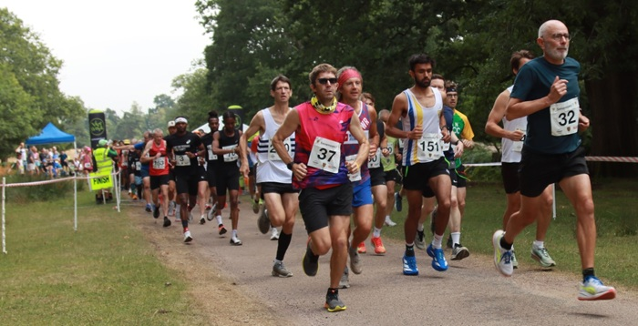
Sevenoaks 7
164 runners through Knole Park, plus the free junior 3.5k.
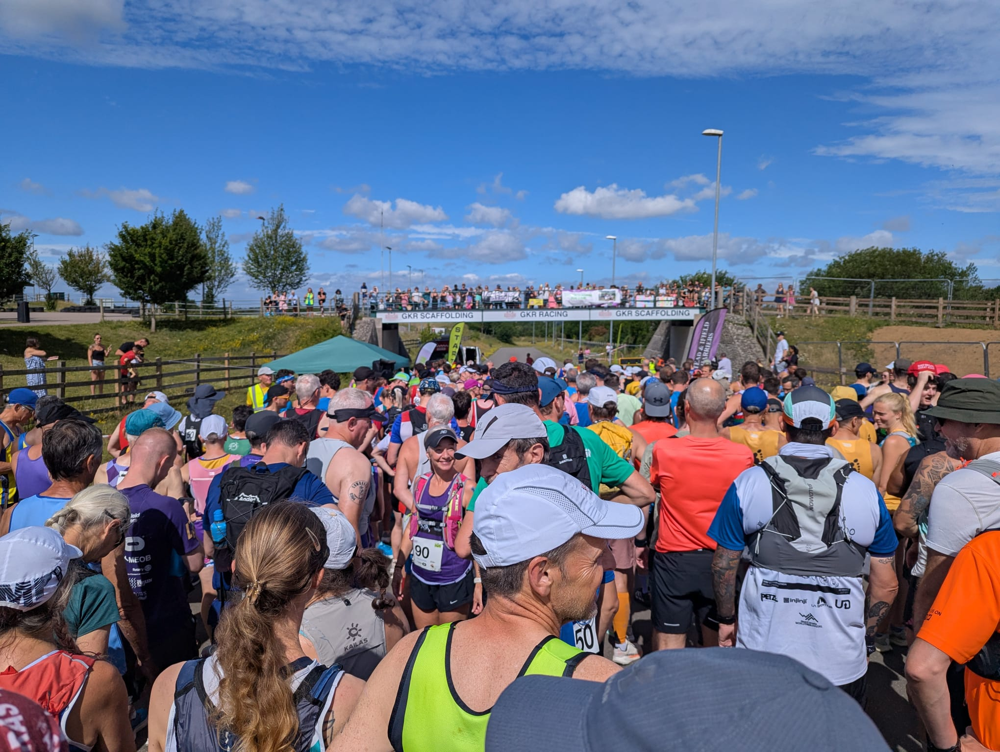
North Downs Run 2026
Club group on the 30k trail along the ridge.

Pauline Dalton Trophy Handicap 2026
Inaugural 3k handicap for juniors and seniors, in Pauline’s memory.

SAC at London Marathon 2026
SAC vests from The Mall to Birdcage Walk.
Further back
The rest of the news archive.

Allan is UK No. 1
Congratulations to Allan Lee from coach Jamie Philip after Allan went sub 16 at the Veterans AC Battersea Park 5k on 31st March 2026. Just after his 53rd birthday, Allan ran a…
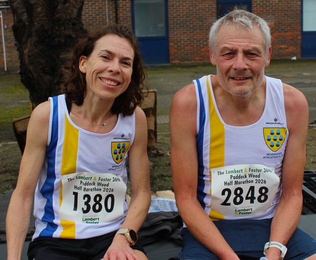
SAC at Paddock Wood Half Marathon 2026
Near perfect conditions - cloudy, nine degrees C and nearly windless - helped SAC runners set some great times at the 2026 Paddock Wood Half on 8th March. With plenty of…

SAC at KFL 2025/26 Match 7 Mote Park
423 runners from the 18 registered cross-country Clubs in Kent arrived for an early morning start in Mote Park for the final race in the 2025/26 season, writes Jim Knight. It…

SAC at KFL 2025/26 Match 6 Allhallows
The penultimate race of this year’s Kent Fitness League took place in Allhallows Holiday Park near Rochester on Sunday February 8th, writes Jim Knight. This year’s Kent Fitness…

SAC at KFL 2025/26 Match 5 Betteshanger Country Park
The 5th race in the 2025 / 26 Kent Fitness League series took place in Betteshanger Park, Deal on Sunday January 11th, writes Jim Knight. 447 runners, including 25 who had made…

SAC at KFL 2025/26 Match 4 Minnis Bay
A team of 27 runners from Sevenoaks Athletics Club braved the bitter cold to run in the 4th race of the KFL series, in Minnis Bay, Birchington on Sunday January 4th, writes Jim…
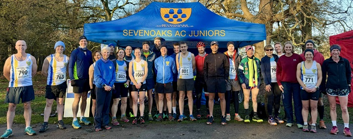
SAC at KFL 2025/26 Match 3 Knole Park
The third race in the 2025/26 Kent Fitness League series took place in Knole Park on Sunday November 30th, writes Jim Knight. Saturday’s rain clouds blew away and it was a fine…

SAC at KFL 2025/26 Match 2 Oxleas Woods
The second race in the Kent Fitness League 2026/26 season took place in Eltham on Sunday Nov 23rd, writes Jim Knight. 558 runners from 18 Kent Athletics Clubs, including a team…
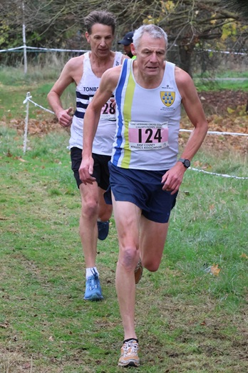
SAC at Kent Masters XC Champs 2025
Keith Dowson claimed the M60 bronze medal as four SAC runners contested the Kent Masters cross-country champs at Central Park, Dartford on 22nd November. After dominating on…

SAC at KXCL 2025-26 Danson Park
Just three SAC runners continued their challenge in the 2025-26 Kent cross-country league at Danson Park on 15th November. In the M50 race, Oloff Van Zyl was 11th and 2nd M55…

SAC at KFL Swanley 2025
The first race of the 2025/26 Kent Fitness League took place in Swanley Park on Sunday November 9th, writes Jim Knight. A record 665 runners, including 37 from Sevenoaks AC,…
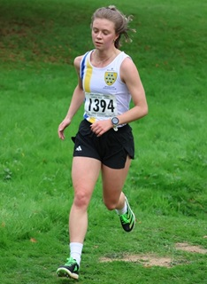
SAC at KXCL 2025-26 Somerhill
Six senior SAC members contested the second race of the Kent XC League 2025-26 on 18 October in mild, dry conditions. Yon Marsh was the standout SAC performer as first M65 in…

SAC at KXCL 2025-26 Footscray Meadows
In warm temperatures, bright sunshine and a firm but lumpy course, six senior SAC runners took part in the first Kent League event of the new cross-country season at Footscray…

SAC at Tonbridge Half & 10k 2025
Six SAC runners tackled the Tonbridge Half and 10k on 5th October with brilliant results. David Ives won the 10k and Ed Saunders led the SAC Half runners home in tenth place,…

SAC at Races 28th September 2025
Si Six SAC runners took part in the Vitality London 10k and recorded some impressive times in the capital, with Jake Mears (above) leading the SAC runners (see left) home in…

SAC Handicap September 2025
Andrew Mead (above right) won the final monthly handicap race where a splendid turnout graced the historic occasion, writes Simon Hallpike. Dan Witt was second and Maria Ashlee…

SAC Handicap August 2025
Heather Fitzmaurice won the August handicap ahead of Jon Maxim and Simon Hallpike. Heather beat her handicap by over a minute with her best run over the seven-mile course for…
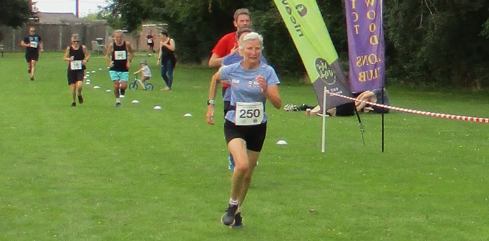
East Peckham 10k 2025
Only five SAC runners were attracted to East Peckham, near Paddock Wood, for the 10k on 27th July, despite the potential for fast times on a pretty flat course. But there were…
SAC Handicap July 2025
Heather Fitzmaurice easily won the July handicap ahead of Simon Hallpike and Sam Znetyniak. Heather beat her handicap by a minute and was the fastest runner on the day, as well…
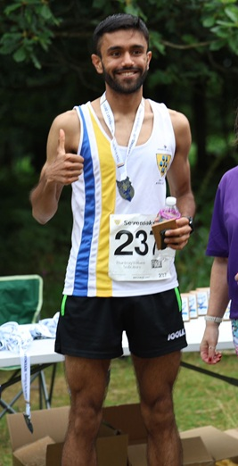
SAC at the Sevenoaks 7 2025
With new management and Kent Grand Prix status, the Sevenoaks 7 attracted twice as many runners as in recent years. The organisers and helpers, led by David Hale and Lucy…

SAC at Penshurst Relays 2025
SAC fielded six teams of three runners each at the Tonbridge AC Midsummer Relays at Penshurst Place on the evening of Wednesday 25th June, made up of four mixed and two male…

SAC Handicap June 2025
John Denye r won the sixth race of the 2025 handicap series in breezy conditions. John was also fastest scoring runner on the day with Steve Hough the fastest overall. With…
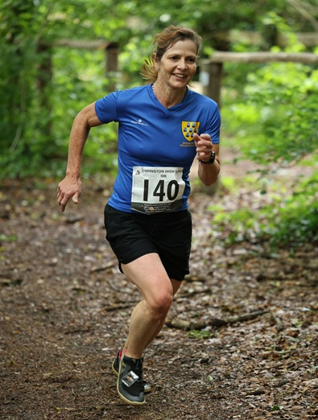
High Elms 10k 2025
Only a small contingent of SAC runners contested the sixth race of the Kent Grand Prix series, the hilly trail High Elms 10k on 8th June. But with decent returns as Heather…

SAC Handicap May 2025
Jon Maxim won the fifth race of the 2025 handicap series and was the only runner to beat his handicap in windy conditions. Jon was also fastest on the day with Heather…
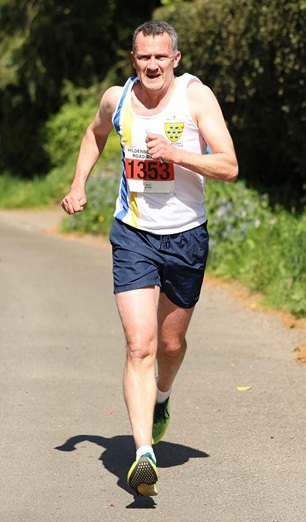
Hildenborough Races and Ted Pepper 10k 2025
SAC runners turned out at two local events on bank holiday Monday 3rd May, with some impressive results. Dan Witt was 14th and first M50 in the Hildenborough 5 in 33:58. "It…

London Marathon 2025
Eight SAC runners completed the Marathon on 27th April, with some great running in the increasing heat. Jo Rodda took more than a minute off her W45 club 2nd best record and…

SAC Handicap April 2025
Alan Male won the April handicap over a slightly lengthened seven mile course, with Jon Maxim second and Chris Desmond third. Jon was fastest on the day with Heather…
SAC Handicap March 2025
Jon Maxim won the March (five-mile) handicap race ahead of Anthony Waldron and Heather Fitzmaurice. Jon was the fastest man and Heather the fastest scoring woman, but Jane…

Paddock Wood Half Marathon 2025
Eighteen SAC runners contested the Paddock Wood Half Marathon on 9th March 2025 in warm sunny conditions with some great performances. Allan Lee led the Sevenoaks runners home…

SAC at Dartford Half Marathon 2025
Mostly in freezing fog, Nicolene Hanekom was the women's winner of the Dartford Half Marathon and the incorporated Kent Long Course Road Race Championship at Central Park,…
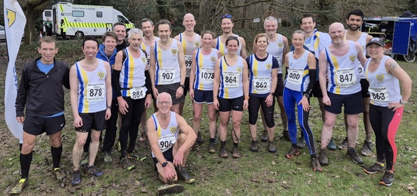
KFL 2024-25 - Match 6 - Blean Woods
The final race in the Kent Fitness League 24/25 series took place at Blean Woods, Rough Common near Canterbury on Sunday Feb 23rd with 361 runners taking part, writes Jim…
SAC Handicap February 2025
Sam Znetyniak won the second race of the 2025 handicap series and was fastest woman in cold and wet conditions. Chris Desmond was second and ran the fastest time of the day. No…

KFL 2024-25 - Match 5 - Allhallows
The penultimate race of this year’s Kent Fitness League took place in Allhallows Holiday Park near Rochester on Sunday February 2nd, writes Jim Knight. Allhalows is one of the…

SAC Handicap January 2025
Chris Desmond won the first race of the new 2025 handicap series in cold conditions. James Baker was second and ran the fastest time of the day. No handicaps were beaten by a…

KFL 2024-25 - Match 4 - Minnis Bay
A team of 22 runners from Sevenoaks Athletics Club braved the elements to run in the 4th race of the KFL series, in Minnis Bay, Birchington on Sunday January 5th, writes Jim…
SAC Handicap December 2024
Dan Witt made sure of winning the 2024 handicap trophy with an emphatic victory in the final race of the series over seven hilly and stormy miles on 8th December. John Denyer…

KFL 2024-25 - Match 3 - Knole
The third race in the 2024/25 Kent Fitness League series took place in Knole Park on Sunday December 1st, 2024, writes Jim Knight. In mild and misty conditions, a team of 12…
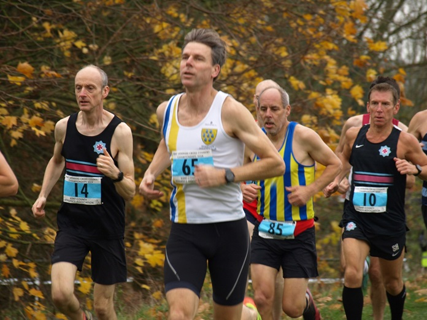
Kent Masters XC 2024
Injury and illness depleted SAC's attendance at the Kent Masters Cross Country Championships at Central Park, Dartford on 30th November, leaving only five contestants in the…
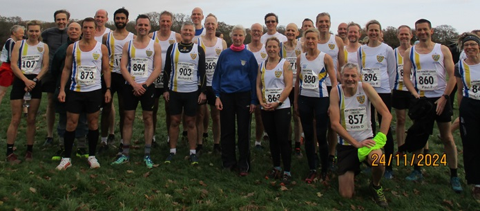
KFL 2024-25 - Match 2 - Oxleas Wood
The second race in the Kent Fitness League 2024/25 season took place in Eltham on Sunday Nov 24th, writes Jim Knight. 535 runners from 18 Kent Athletics Clubs, including a team…
SAC Handicap November 2024
Simon Rowe won the November handicap to move to second place in the series. Heather Fitzmaurice was second with Sam Znetyniak third. Heather was the fastest woman and Chris…
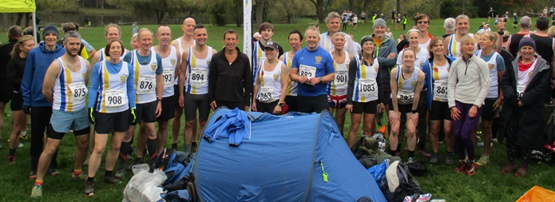
KFL 2024-25 - Match 1 - Swanley
The first race of the 2024/25 Kent Fitness League took place in Swanley Park on Sunday November 10th, writes Jim Knight. A record 640 runners, including 37 from Sevenoaks AC,…
SAC Handicap October 2024
Heather Fitzmaurice led from gun to tape to win the October Handicap by over two minutes from Simon Hallpike and Sam Znetyniak. Heather was the fastest woman and James Baker…
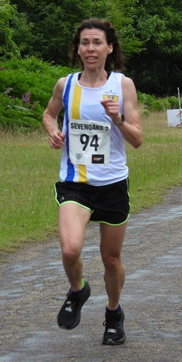
Larkfield 10k 2024
Nine Sevenoaks AC runners contested the Larkfield 10k on 21st September with some excellent results. As last year, the event doubled as the KCAA Short-Course Road Race…

SAC Handicap September 2024
Dan Witt won the September handicap ahead of Andrew Mead and Chris Desmond. Nicola Glover was the fastest runner overall and Andrew was the fastest man. Dan's fourth scoring…
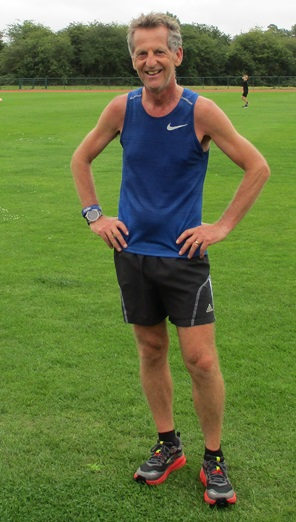
SAC Handicap August 2024
Chris Desmond won the August handicap (on 21st July), from Simon Hallpike and James Baker. James was the fastest on the day with fourth-placed Sam Znetyniak the fastest woman.…

East Peckham 10.5k 2024
Seven SAC runners attended the East Peckham 10k on 28th July and despite searing heat and late course changes adding an extra half kilometre to the distance, there were some…

SAC Handicap July 2024
John Denyer won the July handicap race by three minutes fom Dan Witt with Chris Desmond third. David Hale was the fastest runner overall and Sam Znetyniak was the fastest…

SAC Mile Race 2024
Eighteen SAC runners contested the annual SAC Mile Races on 18th July organised by John Denyer with timing and recording help from Andrew Mead and Graham Dwyer. In excellent…

Sevenoaks 7 2024 - report
The 29th Sevenoaks 7, organised by Sevenoaks Athletics Club, took place in Knole Park on Sunday July 7th, writes Jim Knight. Over 150 runners from all around the Southern…

TAC Summer Relays 2024
Sevenoaks AC's mixed A-team of Nicolene Hanekom, Ed Saunders and Andrew Hutchinson were second in their category at the Tonbridge AC Summer Relays at Penshurst Place on…
SAC Handicap June 2024
Nicola Glover won the June handicap and ran the fastest time. In a small field, Simon Hallpike was second and Andrew Mead third. That puts Andrew in the lead in the series at…

Eastbourne Ron Hill Mile Night 2024
Jamie Philip was first V40 at the Eastbourne Ron Hill Mile Night on 24th May in 4.48, 13 seconds off the previous V45 club best. The full results are here .

SAC Handicap May 2024
Dan Witt won the May handicap ahead of Jon Copping and Andrew Mead. Keith Dowson was the fastest scoring runner and Nicola Glover the fastest woman. Simon Rowe now leads the…

Hildenborough 5 & 10 2024
David Ives was eighth overall and second M45, Keith Dowson first M60 and Caroline Fenwick third W45 as six SAC runners tackled the Kent GP Hildenborough 5 race in persistent…

SAC at London Marathon 2024
Eight SAC runners tackled this year's London Marathon, with some brilliant results: Of particular note of course is Nicolene's 4th W45-49 category place, a club record by over…
SAC Handicap April 2024
Andrew Mead won the April handicap in wet and windy conditions ahead of David Killpack and Simon Rowe. David Hale ran the fastest time of the day. in the first series table of…
SAC Handicap March 2024
David Killpack (right) won the March handicap ahead of Dan Witt (left), with the first six runners beating their handicaps in wet and sometimes slippery conditions. (Note the…
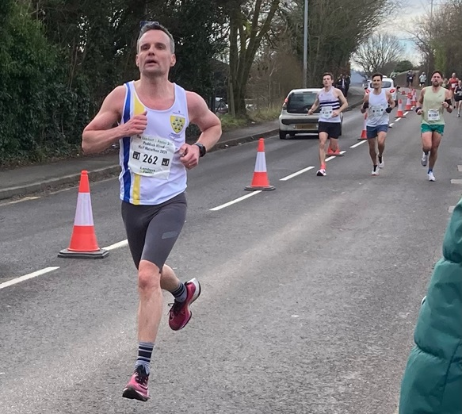
Paddock Wood Half Marathon 2024
Jamie Philip led the Sevenoaks AC team home with a sub 1:17 performance as 15 of our runners tackled the Paddock Wood Half in near perfect conditions on Sunday 3rd March. The…

KFL 2023/24 Match 7 (Final) - Blean Woods
The final race in the Kent Fitness League 23/24 series took place in Blean Woods at Rough Common near Canterbury on Sunday Feb 25th, writes Jim Knight. After days of heavy rain…
SAC Handicap February 2024
Simon Rowe won the second race of the 2024 handicap series over seven miles by over three minutes from Andrew Mead on Sunday 11th February. Nicola Glover was the fastest woman…
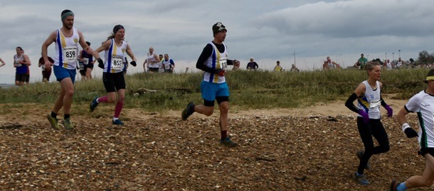
KFL 2023/24 Match 6 - Allhallows
The penultimate race of this year’s Kent Fitness League took place in Allhallows Holiday Park near Rochester on Sunday February 4th. This year’s Kent Fitness League has been…
SAC Handicap January 2024
Sylvia Lewis led all the way to win the January handicap race by three minutes. David Hale in second place was the fastest overall with third-placed Sam Znetyniak the fastest…

KFL 2023/24 Match 5 - Betteshanger Park, Deal
The 5th race in the 2023/24 Kent Fitness League series took place in Betteshanger Park, Deal on Sunday January 14th, writes Jim Knight. 449 runners, including 28 who had made…

KFL 2023/24 Match 4 - Minnis Bay
A team of 20 runners from Sevenoaks Athletics Club braved the elements to run in the 4th race of the KFL series, in Minnis Bay, Birchington on Sunday January 7th, writes Jim…

Richard Reaches 500
As heralded by Jim Knight in SAC Update No.180 , SAC legend Richard Pitcairn Knowles - 91 later this month - completed his 500th parkrun at Tonbridge on 2nd December. This is…
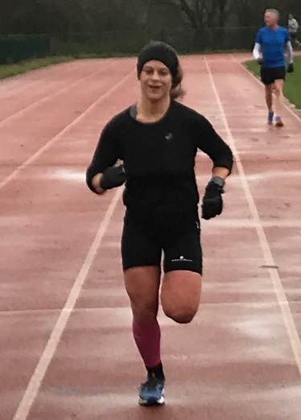
SAC Handicap December 2023
Nicola Glover won the final handicap race of the 2023 series, just ahead of Andrew Mead, ensuring Jim Knight remained on top of the series table to win the trophy by one point…

Kent Masters XC Champs 2023
Allan Lee won M50 gold and Joanne Rodda W45 silver at the Kent Masters Cross Country Championships in Central Park, Dartford on 2nd December. Other SAC runners were Caroline…
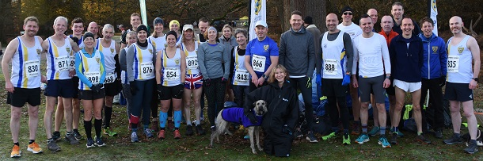
KFL 2023/24 Match 3 - Knole Park
The third race in the 2023/24 Kent Fitness League series took place in Knole Park on Sunday November 26th, writes Jim Knight. In cold and frosty conditions, a team of 15…
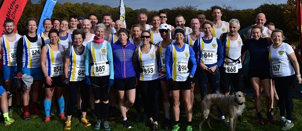
KFL 2023/24 Match 2 - Oxleas Wood
The second race in the Kent Fitness League 2023/24 season took place in Eltham on Sunday Nov 19th, writes Jim Knight. 545 runners from18 Kent Athletics Clubs, including a…

SAC Handicap November 2023
James Baker won the penultimate handicap race of the 2023 series by five seconds after Jim Knight led for almost the whole race. David Hale in third was fastest overall and…

KFL 2023/24 Match 1 - Swanley
The first race of the 2023/24 Kent Fitness League took place in Swanley Park on Sunday November 11th, writes Jim Knight. A record 618 runners, including 38 from Sevenoaks AC,…
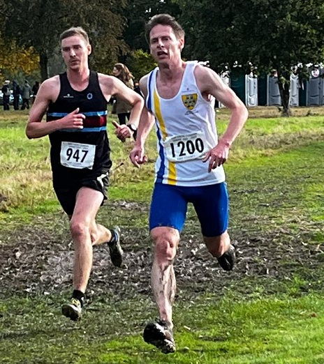
KXCL 2023/24 Match 2 - Somerhill
Allan Lee was first M50, James Graham fourth M70, Holly Diprose sixth U17W, Rebecca Picard seventh W45 and James Ross tenth U13B, while both the boys and girls under-13 teams…

SAC Handicap October 2023
Caroline Fenwick won the October handicap by more than six minutes ahead of series leader David Hale. Caroline was the fastest woman and David the fastest overall. With fourth…

Tonbridge Half Marathon & 10k & 5k 2023
Nine Sevenoaks AC runners took on the Tonbridge Half or accompanying 10k in humid conditions on 1st October with some excellent results. Johnny Mead was fifth overall in the…
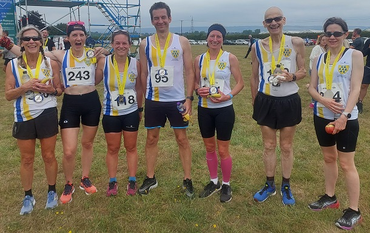
Larkfield 10k 2023
Ten SAC runners contested the Larkfield 10k on 17th September and came away with five medals after some great performances. In a race that doubled as the Kent Road Race…
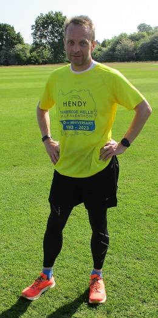
SAC Handicap September 2023
David Hale won the September handicap in hot, humid conditions ahead of Jim Knight with Lucy Wilkes third. David was the fastest scorer overall, with Lucy fastest scoring…
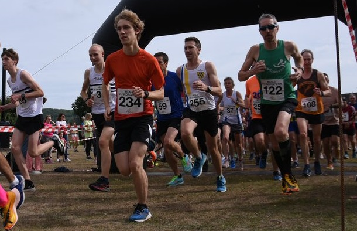
SAC at Weald 10k 2023
Eleven SAC runners contested the 2023 Weald 10k on 3rd September, with our men's team taking the prize for second place. There were some excellent placings and age category…

SAC Handicap August 2023
Jim Knight won the August handicap race ahead of David Hale. Jim was over 2 minutes clear and beat his handicap by 132 seconds over seven miles in bright, windy conditions.…

East Peckham 10k 2023
Six SAC runners skipped Jim's trail run on Sunday 30th July to contest the East Peckham 10k, with excellent age category results. The course was flat, the weather was…

SCVAC T&F 2023 - Match 6, Dartford
The final meeting for the current season in the Kent SCVAC masters athletics league took place on Friday 28 July at Dartford, writes Geoffrey Kitchener. Our women’s team…

SAC Handicap July 2023
As in the June race, Keith Dowson won the July handicap race ahead of David Hale. This time Keith was two minutes clear and the only runner to beat his handicap over five miles…
SCVAC T&F 2023 - Match 5, Tonbridge
The results of our over-35s athletics meeting at Tonbridge on 7th July have just gone onto the Power of 10 website (at full results ), writes Gary Walsh. There were 6 team…

SCVAC T&F 2023 - Match 4, Norman Park, Bromley
The warm, sunny evening of Friday 23 June made for a good outing for over-35 athletics at the Norman Park track, Bromley, writes Geoffrey Kitchener. We had a team of five –…
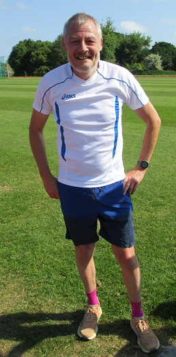
SAC Handicap June 2023
Keith Dowson won the June handicap race ahead of David Hale and Rebecca Pickard. Those three runners beat their handicaps over seven miles in fine conditions. Rebecca was the…
SCVAC T&F - Tonbridge June 2023
The results of our over-35s athletics meeting at Tonbridge on 2nd June have just gone onto the Power of 10 website (at full results ), writes Gary Walsh. There were 6 team…
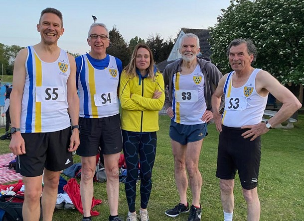
SCVAC T&F 26 May 2023 - Dartford
The results of our over-35s athletics meeting at Dartford on 26 May have just gone onto the power of 10 website, so I’m now reporting, writes Geoffrey Kitchener. There were…
Southern Athletics League 2023 - Matches 1 & 2
Southern League Match 1 Dartford 20th May 2023 The Club fielded its first ever Team in the Southern League, writes Darrell Smith. This is a Senior League but open to U17s and…
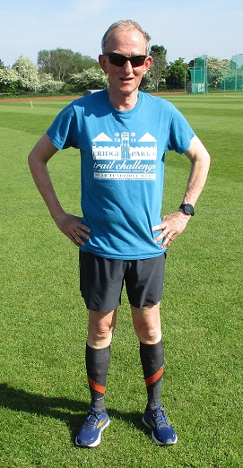
SAC Handicap May 2023
Jim Knight won the May handicap race ahead of David Hale and Keith Dowson. Five runners beat their handicaps over five miles in fine conditions. Lucy Wilkes was the fastest…

London Marathon 2023
Six SAC runners completed the London Marathon on 23rd April. Bridgit Weekes finished in the top ten in her category, while Hugh Brennan ran a great time to lead the club's…
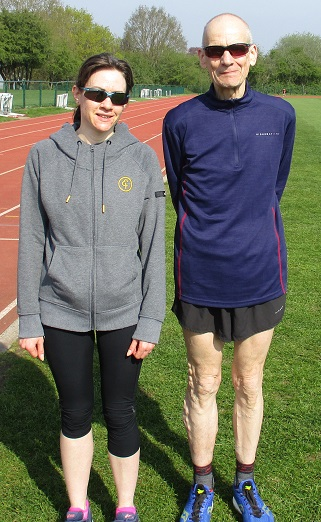
SAC Handicap April 2023
Simon Hallpike won the April handicap race by 28 seconds from Graham Dwyer with Lucy Wilkes first woman 2 seconds further back in third. Rebecca Pickard was fastest woman and…

SAC Handicap March 2023
Bridgit Weekes won the March handicap with a new PB over the five mile course. Bridgit improved her women's age-category record with a score which is second best overall after…

Paddock Wood Half Marathon 2023
Bridgit Weekes was second W65, Lionel Stielow was third M70 and Russell Crane led the team with a fast time as 26 Sevenoaks AC runners completed the 33rd Paddock Wood Half on…

SAC Handicap February 2023
Lucy Wilkes won the second race of the 2023 handicap series on 26th February by two and a half minutes with a big new PB over the seven mile course. Rebecca Pickard was the…

KFL 2022/23 Match 7 - All Hallows
This year’s Kent Fitness League has been hard fought between the leading contenders, Sevenoaks AC, Petts Wood Runners, Canterbury Harriers and Dartford Harriers, writes Jim…
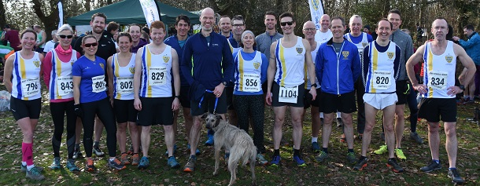
KFL 2022/23 Match 6 - Blean Woods
The team captains called for a big turnout for the penultimate match of the KFL 2022/23 season and the club responded with 29 recorded finishers at the event. With the race…
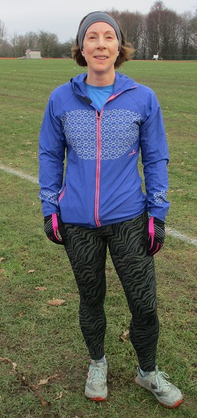
SAC Handicap January 2023
Sam Znetyniak won the first club handicap race of 2023 ahead of Lucy Wilkes. Sam was the only runner to beat her handicap over the five mile course. Chris Desmond in third was…

KFL 2022/23 Match 5 - Betteshanger Park
No fewer than 27 SAC runners made the trip to Deal for the fifth match of the Kent Fitness League 2022/23 season at Betteshanger Park on 15th January. Both the women's and…

KFL 2022/23 Match 4 - Minnis Bay
Kent Fitness League – Race 4 – Minnis Bay. Jan 8th 2023. The cross-country course at Minnis Bay is unique. Runners start at the end of Marine Parade and follow the coastal…

SAC Handicap December 2022
In the coldest conditions ever in the 35-year history of the current format of the club handicap race, Jane Morgan won the final race of the 2022 handicap series and just…
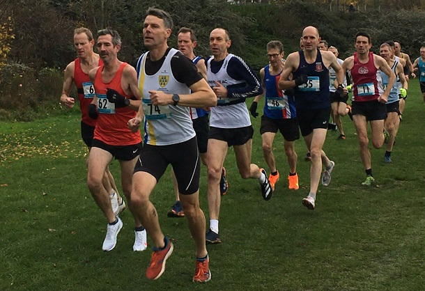
Kent Masters XC Champs 2022
Laura Bestow was 7th W35 and Rebecca Pickard 9th W45 as just five SAC runners contested the county veterans championships at Dartford's Central Park. In the biggest field of…

KFL 2022/23 Match 3 - Oxleas Wood
Sevenoaks AC women retained their series lead despite finishing third at the third match of the 2022/23 Kent Fitness League at Oxleas Wood on 20th November. Bridgit Weekes,…
SAC Handicap November 2022
Jane Morgan won the penultimate race of the 2022 handicap series in torrential rain. Lucy Wilkes was second and Sam Znetyniak third as women dominated this eleventh race of the…

KFL 2022/23 Match 2 - Swanley
Sevenoaks AC women repeated their win from the first match as 42 SAC runners contested match 2 at Swanley Park on 13th November. Pauline Dalton, Suzy Claridge, Caroline Fenwick…
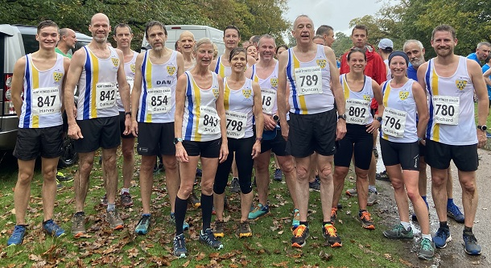
KFL 2022/23 Match 1 - Knole
The first race in the 2022/23 Kent Fitness League series took place in Knole Park on Sunday October 30th, writes Jim Knight. In wet and rainy conditions, the 555 competitors…
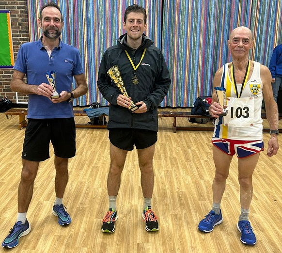
Tonbridge 10k 2022
Paul Freeman-Jones was second overall, Sean Leith first M50 and Lionel Stielow first M70 at the Tonbridge 10k on 23rd October. In addition, Graham Dwyer was second M50 and Alan…
SAC Handicap October 2022
Andrew Mead won the October handicap race with his fastest time over the seven mile course for ten years. James Baker was second, just ahead of Simon Hallpike. Suzy Claridge…

Tonbridge Half Marathon 2022
Fourteen Sevenoaks AC runners tackled the Tonbridge Half in fine conditions on 9th October, albeit five of them in official pacing roles.Bridgit Weekes was first W60, with…
SAC Handicap September 2022
Andrew Mead won the September handicap by one second from James Baker. Andrew ran the fastest five-mile time of the series so far, while Suzy Claridge was the fastest woman on…
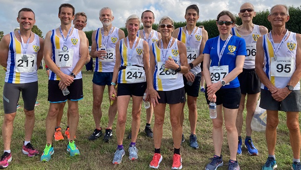
Larkfield 10k 2022
Fourteen Sevenoaks AC runners took part in the Larkfield 10k on 11th September, led home by Jamie Philip, who was ninth and third M40. With Kent county short course titles also…
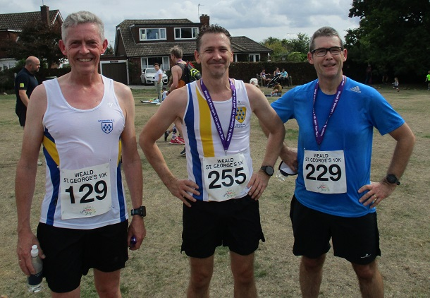
Weald St Georges 10k 2022
Suzy Claridge was third woman in the Weald 10k on 4th September, as well as first veteran woman and W50. This was just one of many excellent results by SAC runners at the event…

SAC Handicap August 2022
Andrew Mead won the August handicap ahead of Suzy Claridge. Andrew was fastest overall and Suzy was fastest woman. Bridgit Weekes was third and Suzy now leads the series after…

East Peckham 10k 2022
Jamie Philip was 7th overall and first veteran at the East Peckham 10k on 31st July. Conditions were cloudy with a strong breeze and cooler than in some of the previous years…
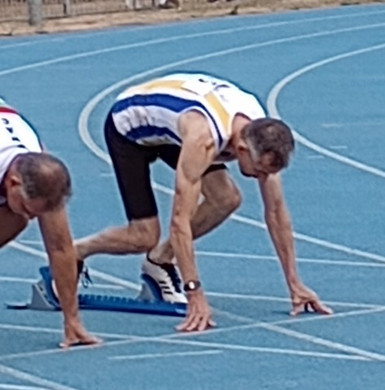
SCVAC T&F Dartford 2022
The final meeting of the over-35s SCVAC track and field league competition this year was held at Dartford on 29 July, writes Geoffrey Kitchener. We had no women's team this…
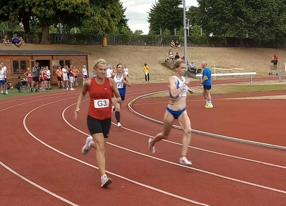
SCVAC T&F Tonbridge 2022
Tonbridge was the venue for our third over-35 athletics league competition of the season on Friday 15 July, writes Geoffrey Kitchener, and we had the benefit this time of…
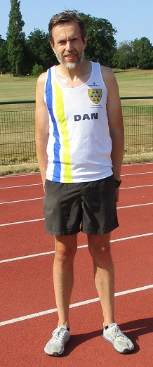
SAC Handicap July 2022
Dan Witt won the July handicap ahead of Bridg Weekes and Chris Desmond. Dan also ran the fastest time with Suzy Claridge the fastest woman. Bridg also improved her club…
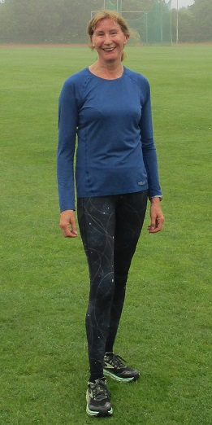
SAC Handicap June 2022
Pauline Dalton won the June handicap ahead of Suzy Claridge and Lucy Wilkes. Suzy Claridge ran the fastest time and Graham Dwyer was the fastest man. After five races, Lucy…

Harvel 5 2022
Six Sevenoaks AC athletes managed to get entries for the Harvel 5 on 28th May, with some impressive running, especially by the more senior members. Pauline Dalton won the W55…
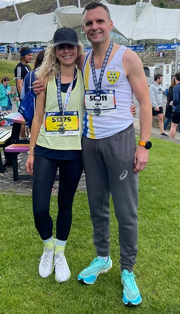
Edinburgh Marathon Festival 10k 2022
Jamie Philip was ninth overall and first M40 in a chip time of 37:11 at the Edinburgh Marathon Festival 10k on Saturday 28th May. The full results are here .

SAC Handicap May 2022
Lucy Wilkes won the May handicap ahead of Jane Morgan and Bridg Weekes. Suzy Claridge ran the fastest time and Graham Dwyer was the fastest man. After five races, Jane leads…

Darent Valley 10k 2022
No fewer than thirteen Sevenoaks AC runners took part in the Darent Valley 10k on 8th May with Bridgit Weekes, Caroline Fenwick, and Andrew Mead all coming fourth in their…

SAC Handicap April 2022
Sam Znetyniak won the April handicap by eleven seconds ahead of Suzy Claridge, with Chris Desmond third. Andrew Mead was the fastest overall, with Suzy Claridge the fastest…
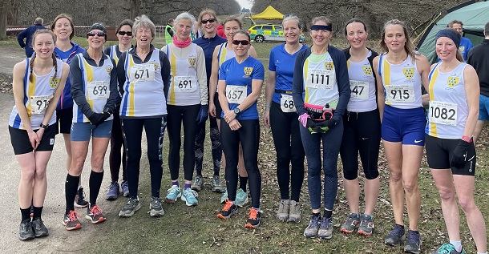
KFL 2021-22 Match 6 - Knole
The sixth and final race in the 2021/22 Kent Fitness League series took place in Knole Park on Sunday March 20th, writes Jim Knight. In beautiful sunny conditions the 326…
SAC Handicap March 2022
Keith Dowson won the March handicap by twelve seconds ahead of Jane Morgan, with Chris Desmond third. Andrew Mead was the fastest overall, with Suzy Claridge the fastest woman.…
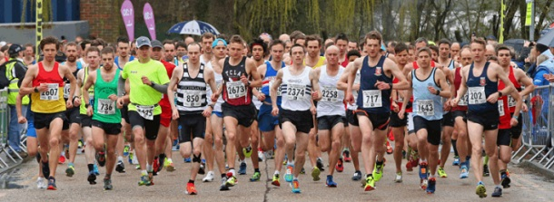
Paddock Wood Half 2022
Seven SAC runners completed the Paddock Wood Half Marathon in excellent running conditions on 13th March. John Stevens led the Sevenoaks runners home and was fourth M60 in a…

KFL 2021-22 Match 5 - Blean Woods
Sevenoaks AC women increased their lead in the Kent Fitness cross-country league with a superb victory in the penultimate race of the series at Blean Woods, Canterbury on 6th…

Tunbridge Wells Half Marathon 2022
Last-minute cancellation of the Knole KFL race caused a quick switch by some of the SAC runners to the Tunbridge Wells Half on 20th February. There were some good runs too, as…
SAC Handicap February 2022
Alan Male won the second race of the 2022 Sevenoaks AC monthly handicap series beating his handicap by over four minutes. He was twenty seconds clear of Keith Dowson in second…

KXCL 2021-22 Match 5 - Bromley
Andrew Mead led home the Sevenoaks AC runners at the final Kent League match of the season at Norman Park on 12th February. With only three SAC members competing, the senior…
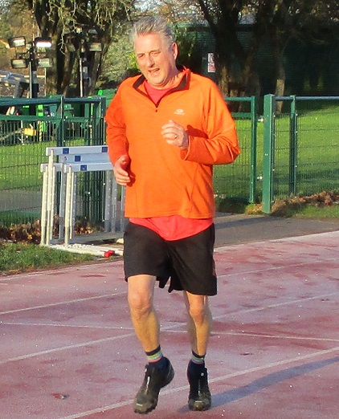
SAC Handicap January 2022
Tony Horlock won the January handicap race by twenty-nine seconds, ahead of John Denyer. Andrew Mead in third place was fastest overall, with Lucy Wilkes in fifth the fastest…

KFL 2021-22 Match 4 - Minnis Bay
Sevenoaks AC women retained their lead in the Kent Fitness League after the fourth match at Minnis Bay on 2nd January. The cross-country course at Minnis Bay is unique, adds…
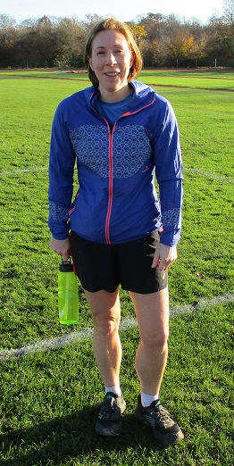
SAC Handicap December 2021
Sam Znetyniak chalked up her third successive win in the handicap series, taking the final event by nearly two minutes. But with only three scoring runs, Sam made no effect on…
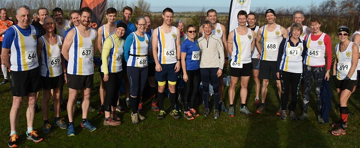
KFL 2021-22 Match 3 - Betteshanger Park
The 3rd race in the 2021/22 Kent Fitness League series took place in Betteshanger Park, Deal on Sunday December 12th, writes Jim Knight. 364 runners, including 25 who had made…
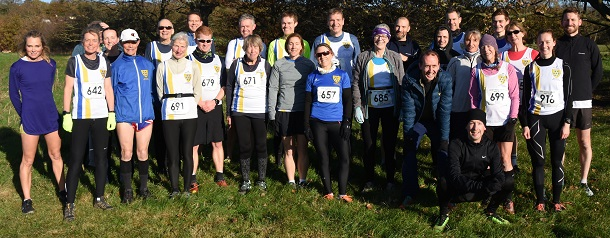
KFL 2021-22 Match 2 - Oxleas Wood
The second race in the Kent Fitness League 2021/22 season took place in Eltham on Sunday Nov 28th, writes Jim Knight. 508 runners from 18 Kent Athletics Clubs tackled the hilly…
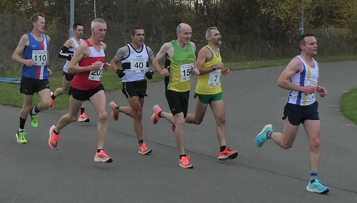
BMAF 10k Championships 2021
There were three SAC runners at yesterday's 10k race at the Cyclopark in Gravesend, writes Dan Witt. Conditions were chilly, overcast and slightly blustery, but both Jamie…
SAC Handicap November 2021
Sam Znetyniak won the November handicap ahead of Suzy Claridge, but Suzy clinched the series trophy at the race on 21st November. Suzy's time was a personal best for the course…
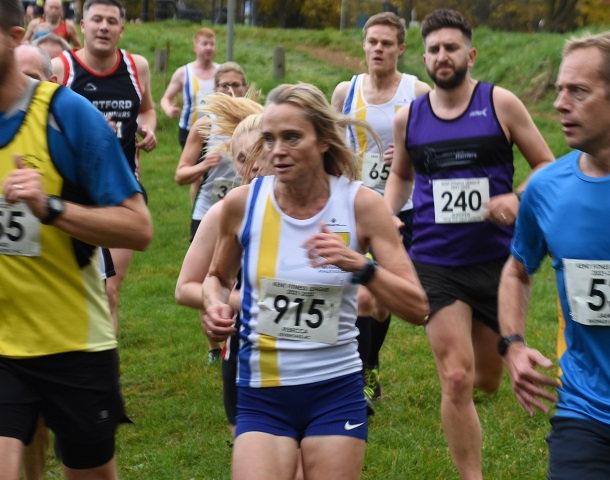
KFL 2021-22 Match 1 - Swanley
Sevenoaks AC's women were second at the first match of the new KFL season at Swanley on 14th November. Scorers were Pauline Dalton (W55), Suzy Claridge (W45), Andrea Berquez…
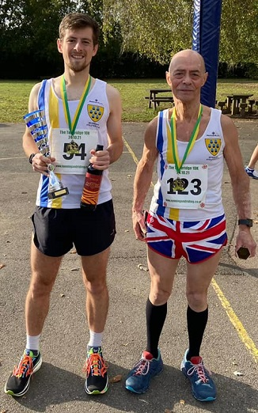
Tonbridge 10k 2021
Just three Sevenoaks AC runners completed the Tonbridge 10k on 24th October, but Paul Freeman-Jones won the race, Lionel Steilow was first M70 and Graham Dwyer was fourth M40.…
Beachy Head Marathon 2021
Six Sevenoaks AC runners tackled the Beachy Head Marathon on 23rd October. The race is off-road and features over 800 metres of climbing and a field of over 1500 finishers. The…
KXCL 2021-22 Match 2 - Somerhill
Sevenoaks AC once again closed out teams in the senior men's and under-15 boys categories at the second KXCL match of the series at Somerhill on 23rd October. Again there were…

SAC Handicap October 2021
Sam Znetyniak won the October handicap by over four minutes, with Rebecca Pickard second and Suzy Claridge third. Rebecca was fastest woman and Dan Witt fastest overall. Suzy…
Chelmsford Marathon 2021
Bridgit Weekes was first W60 in a close race at the Chelmsford Marathon on 17th October. The full results are here .
KXCL 2021-22 Match 1 - Swanley
The cross-country season began on 16th October with the Kent League fixture at Swanley Park and six senior and ten junior SAC athletes ran. The men completed teams in three…
Tonbridge Half Marathon 2021
Sally Shewell was first W60, Cath Linney first W50 and Andrew Hutchinson 3rd M40 as Ed Saunders led the 13 Sevenoaks AC runners round the undulating Tonbridge Half course in…

London Marathon 2021
Four SAC runners completed the London Marathon on 3rd October with the following results: The full results are here .

SAC Handicap September 2021
Suzy Claridge won the September handicap by a big margin and with a course PB. Chris Desmond was runner-up, two seconds ahead of Andy Ashlee. Suzy continues to lead the series…

Paddock Wood Half 2021
Hugh Brennan led 16 SAC runners home in the Paddock Wood Half on 5 September, with the sudden onset of hot weather adversely affecting many of the runners' times. The Sevenoaks…

SAC Handicap August 2021
Simon Hallpike won the August handicap ahead of Sylvia Lewis with Suzy Claridge in third. Suzy continues to lead the series with Simon a point behind in second and early leader…
SAC 1 Mile Race 2021 - results
Well done to all who ran on 5 August in probably the wettest 1 Mile event we have had, writes organiser John Denyer. We had some very close finishes and some new entries into…

East Peckham 10k 2021
Bridgit Weekes overcame chronic knee issues to finish first W60 at the East Peckham 10k on 1 August, as four of SAC's more mature runners tackled one of the flatest courses in…
SAC Handicap July 2021
John Denyer won the July handicap race with a huge improvement over his previous time for the five mile course. Simon Hallpike was second and moves up to third in the series…
North Downs Run 2021
More than 500 runners tackled the tough North Downs Run 30k race on Sunday 27 June and seven of them were from Sevenoaks AC. Ed Saunders led the SAC team home in 25th place…

Club Half Marathon and 10k June 2021
Results and pictures from the club races on Friday 25th June from Richie Thomas, who comments: "It was dry and sunny for the event and there were some good times recorded on a…
SAC Handicap June 2021
Suzy Claridge won the June handicap race with her fastest time over the seven mile course since 2002. The win pushes Dan Witt down to second and puts Suzy in the lead in the…
SAC Handicap May 2021
Pauline Dalton easily won the May handicap race, the first live one since March 2020. John Denyer in second also beat his handicap. Andrew Mead was fastest overall and Pauline…
SAC (Virtual) Handicap April 2021
Suzy Claridge won the April handicap race ahead of Dan Witt. Suzy was also the fastest woman and Dan the fastest overall. After four races, there are already seven runners in…

Podplus Kent Spring Marathon 2021
Two Sevenoaks AC runners tackled the Podplus Kent Spring Marathon on 11th April, with excellent performances. Sally Shewell was 1st W60 in 4:11:36, while Mike Lochead was…

Staplehurst 10 April 2021
Two Sevenoaks AC athletes contested the Staplehurst "End-of-Year"(!) 10 Mile race on Sunday 25th April. Laura Andrade finished 70th (4th W35) in 1hr 18mins 28secs, while Lionel…
Dorney Marathon 2021
John Witton and Russell Crane were SAC's only representatives at Dorney Lake for the Marathon on 3rd April, but they both finished in under three hours. John was 33rd and 9th…

SAC (Virtual) Handicap March 2021
After winning the previous race, Bridgit Weekes won again in the third race of the 2021 handicap series, this time with a record WMA score. Suzy Claridge was the fastest woman,…
SAC (Virtual) Handicap February 2021
Bridgit Weekes won the second race of the 2021 handicap series by three minutes from Dan Witt. Bridgit was the only runner to beat her handicap. Dan was fastest overall and…
SAC (Virtual) Handicap January 2021
Martin Dixon won the first race of the 2021 handicap series by over four minutes from Lucy Wilkes. Andrew Mead was fastest with Suzy Claridge the fastest woman. Martin has now…
SAC (Virtual) Handicap 2020 - Final Result
Andrew Mead won the final race of the 2020 handicap series to leapfrog Lucy Wilkes and retain his series title. Andrew was also fastest in the race ahead of Dan Witt's best run…
SAC (Virtual) Handicap December 2020
Martin Dixon won the November handicap to set up a down-to-the-wire finale in December. Lucy Wilkes still leads the series but Andrew Mead is now level on 8 points after…
SAC (Virtual) Handicap November 2020
Andrew Mead won the October handicap race ahead of last month's winner, Martin Dixon. Andrew was fastest on the day while Lucy Wilkes was the fastest woman. Andrew's win moves…
SAC (Virtual) Handicap October 2020
Martin Dixon won the September handicap ahead of Lucy Wilkes with Andrew Mead third. Lucy now leads Dan Witt by two points in the series with Andrew another two points behind…

Dorney Lake Marathon - October 2020
Five Sevenoaks runners tackled the Dorney Lake Marathon in Berkshire on 4th October. John Witton, who said: "It was a tough race with the loops in the wind and rain!", led our…

North Devon AONB Marathon and Half
The North Devon AONB Half Marathon and Marathon took place on Sunday 27 September at sunny (but a bit breezy) Woolacombe, writes Ben Taylor. With reduced entries and many…

SAC (Virtual) Handicap September 2020
Dan Witt won the September handicap ahead of Andrew Mead with Lucy Wilkes third. Only Dan beat his handicap. Lucy still leads the series, but Dan has reduced her lead over him…

SAC (Virtual) Handicap July 2020
Jim Knight won his second handicap in a row ahead of John Denyer with Andrew Mead third. The first four runners beat their handicaps as Dan Witt completed his fourth scoring…
SAC (Virtual) Handicap June 2020
Jim Knight won the June handicap ahead of John Denyer with Dan Witt third. The first two runners beat their handicaps with the third close, as most runners chose to run in…
SAC (Virtual) Handicap May 2020
Andy Ashlee won the May (Virtual) handicap by four minutes and was the first and so far only runner to beat his handicap in the lockdown format. Lucy Wilkes was second and she…
SAC (Virtual) Handicap April 2020
Lucy Wilkes won the April handicap and was the fastest woman while John Witton in second place was the fastest overall. The first table of the series has Lucy leading with with…
John Wins Thanet 20
John Witton was Sevenoaks AC's only runner at the Thanet 20 on 15th March 2020. But he won the race by over five minutes with a time of 2:06:27 in windy conditions. The full…
Lydd 20 2020
With spring marathons on the horizon, nine Sevenoaks AC runners warmed up with some encouraging performances at the Lydd 20 on 8 March. SAC's star turn on the day was Bridgit…
SAC Handicap 1 March 2020
Erik Folkesson just held off Sean Leith by one second to win the third race of the 2020 handicap series with Jon Copping in third. Marco Mion was the fastest man and Jane…

SAC Handicap 23 February 2020
Jon Copping won the second race of the 2020 handicap series ahead of Erik Folkesson with Lucy Wilkes third. Andrew Mead was the fastest man and Pauline Dalton the fastest…

Tunbridge Wells Half 2020
Sally Shewell was second W55 as seventeen Sevenoaks AC runners braved storm Dennis and contested the Tunbridge Wells Half Marathon on 16th February. Guillaume Ninevan led them…

KXCL 2019/20 Match 5 - Bromley
In the final Kent League Cross Country fixture of the season on 8th February at Norman Park, Bromley, Sevenoaks AC had just three runners. Suzy Claridge finished in 35th place…
KFL 2019/20 Match 6 - Blean Woods, Rough Common - CANCELLED
Please see this message from Sevenoaks AC team organiser for KFL This email address is being protected from spambots. You need JavaScript enabled to view it. about the…

Canterbury 10 2020
John Witton was ninth overall and just pipped by one second for first M40 as twelve SAC runners tackled the Canterbury 10 on 26th January. This was the first Kent GP race of…

SAC Handicap 19 January 2020
Chris Desmond won the first handicap of the new 2020 series by just two seconds from December winner Marco Mion with Jon Copping third. The next race is a seven-miler on 23rd…
KFL 2019/20 Match 5 - Minnis Bay
With one match still to go, Sevenoaks AC's women's team made sure of victory in the Kent Fitness Cross Country League with a fine second place at the penultimate fixture at…
KFL 2019/20 Match 4 - Shorne Woods
Sevenoaks AC's women's team won for the third time this season as 35 members tackled the new Kent Fitness League course at Shorne Woods. With a big hill and large patch of deep…
SAC Handicap 22 December 2019
Marco Mion won the final handicap race of the 2019 series ahead of Darius Sarshar, but third-placed Andrew Mead had already secured the series trophy. Sylvia Lewis held on to…
KXCL 2019/20 Match 4 - Footscray
Sevenoaks AC once again fielded a full senior men's team in the Kent XC League as James Graham (170th, 49:48) joined ever-presents Andrew Mead (98th (10th over-50), 43:42), Dan…

KFL 2019/20 Match 3 - Oxleas Wood
Sevenoaks AC's women repeated their win from the first match at the third race of the Kent Fitness League 2019/20 at a cold and muddy Oxleas Wood on 1st December. The 5.4 mile…

Kent Veterans/Masters Champs 2019
Sevenoaks AC had representatives in three of the male categories at the Kent County Athletics Vets Championships at Central Park, Dartford on 30 November. In the second event,…
SAC Handicap 24 November 2019
Andrew Mead secured the 2019 handicap trophy with a race to spare as Duncan Warwick-Champion was the surprise winner of the November race. Andrew cannot now be caught while…
Win For David at Bedgebury 10k
David Ives won the Bedgebury 10k , "a soggy and hilly slog", on Sunday 17th November as Sevenoaks AC runners took part in five races on the day. Busiest was the Lullingstone…
KFL 2019/20 Match 2 - Swanley Park
Sevenoaks AC fielded a team of 38 runners for the second match of the 2019/20 Kent Fitness League at New Barn Park, Swanley on 10th November. They put in a fine performance…
KFL 2019/20 Match 1 - Knole Park
Sevenoaks AC's combined team won the first match of the Kent Fitness League cross country over a tough course in Knole Park. The event was superbly organised by Richard Thomas…
SAC Handicap 27 October 2019
David Lobley followed up his win in the September Handicap with a more emphatic one in October. James Baker and Suzy Claridge were the fastest on the day. Andrew Mead continues…
KXCL 2019/20 Match 2 - Somerhill
The SAC men's team moved up to 15th place in the standings after the second match of the 2019/20 Kent Cross Country League at Somerhill on 26th October. Darius Sarshar led the…
Beachy Head Marathon 2019
Seven SAC members tackled this year's Beachy Head Marathon on 26th October, writes Jim Knight. Whilst the rest of the country had pouring rain, it was mild and windy on…

Tonbridge 10k 2019
A small but high quality team of four Sevenoaks AC athletes contested the Tonbridge 10k near Hildenborough on 20th October and all came away with category trophies. Nick…

SAC Prizegiving 2019-20
Club Secretary Erik Folkesson arranged and presented a belated and socially-distanced awards ceremony for the club on 18th October. Pauline Dalton took away the most trophies…
John & Sally Win Categories At Maidstone Half 2019
John Witton was third overall and first M40 while Sally Shewell won the W55 category at the Maidstone Half on 13 October. The tough race was also the final Kent Grand Prix race…
Kent XC League 2019/20 - Match 1, Swanley Park
Sevenoaks AC fielded a full team of four runners in the men's race at the first match of the new Kent League cross-country season at New Barn Park, Swanley on 12th October.…
David, Bridgit & Sylvia Win Categories At Tonbridge Half 2019
David Ives was fourth overall and first M40, Bridgit Weekes first W60 and Sylvia Lewis first W65 at the Tonbridge Half on 6th October. And the Sevenoaks AC women's team of…
Heather Wins Highway 10k 2019
Heather Fitzmaurice won the Highway 10k in Orpington on Sunday 22nd September and was sixteenth overall. The only other Sevenoaks AC runner in the field was Lionel Steilow who…
SAC M80 Titans Clash at Kent Masters
The M80 events at the KCAA Masters Championships at the Erith Stadium on 14th-15th September 2019 were exclusively contested by Sevenoaks AC athletes. Richard Pitcairn-Knowles…
Larkfield 10k 2019
John Witton was 20th and fifth M40 and Lionel Stielow was fifth M70 as just six Sevenoaks AC runners completed the Larkfield 10k in hot sunny conditions on Sunday 15th…
SAC Handicap 8 September 2019
David Lobley won the September handicap ahead of Andrew Mead and Suzy Claridge. Andrew Mead still leads the series by six points ahead of Sylvia Lewis. The next race, over…
SAC at Eridge 10 2019
Heather Fitzmaurice was third and first W45 at the Eridge 10 on 1st September. While the race preferences of Sevenoaks AC runners were split between this race and the Weald…
SAC at Weald 10k 2019
Guillaume Nineven was second, Lee Lintern third, Graham Cook fourth and first M40, Nick Humphrey-Taylor fifth and second M40, Andrew Mead first M50, Zachary Ramsden second M50,…

Dartford 10k 2019
Five Sevenoaks AC runners tackled the Kent GP Dartford 10k on August bank holiday Monday in sapping heat. Andrew Milne had a good run in 27th place overall to lead home his…

SAC Handicap 11 August 2019
Sylvia Lewis won the August handicap race with her best time for two years. Andrew Mead continues to lead the series with Sylvia now six points behind. There's still time to…
East Peckham 10k 2019
Lionel Stielow was 2nd M70 (56:44 for 147th overall) as four SAC runners tackled the East Peckham 10k on 4th August in hot conditions. Zac Ramsden was first home in 24th with…
Bet Sets 100 Mile Club Best
NDW100 3rd August 2019 It was one of hardest events I done, or I forgot about the pain that comes with 100 miler, writes Bet Benn. On start we had chat with Andy wish each…
SAC Handicap 28 July 2019
Suzy Claridge won the July handicap race ahead of Martin Dixon, while Suzy's son Thomas ran the fastest time. Andrew Mead continues to lead the series by a big margin. The…

SAC at Sevenoaks 7 2019
The 26th Sevenoaks 7 took place in Knole Park on Sunday July 14th, writes Jim Knight. The early-morning rain cleared leaving conditions warm but overcast – good conditions for…
North Downs Run 2019
James Mason was sixth and John Witton 10th and third M40 at the North Downs Run on 30th June. The SAC results were: # Name Club Gen Cat Pace Cat Gen All Net/Gun 77 james mason…
Medway 10k 2019
Heather Fitzmaurice was third woman and second W45 as four SAC runners tackled the Medway 10k at Medway Park Gillingham on 2nd June. James Graham was first M65 as Nick…
SAC Handicap 2 June 2019
Andrew Mead won the sixth handicap of the year in the fastest time of the day and now has an unimprovable score after four wins in the series. The details are here .
SCVAC T&F 31 May 2019
Sevenoaks AC's women achieved their best performance to date as Sylvia Lewis, Lesley Knight, Bet Benn, Jo Young, Anna Humphrey-Taylor and Pauline Dalton secured points at…

University of Kent Canterbury 10k 2019
Only one Sevenoaks AC runner contested the University of Kent Canterbury 10k on 19th May. But it was a highly successful outing for John Witton as he collected trophies for…

SCVAC T&F 13 May 2019
The first two SCVAC T&F events of 2019 took place on 3rd and 13th May, with Sevenoaks AC fielding teams in both men's and women's categories. Results for the earlier meeting…
Darent Valley 10k 2019
Fifteen Sevenoaks AC runners took part in the Kent Grand Prix Darent Valley 10k race in near-perfect conditions on 12 May. Sally Shewell was third W55, while Andrew Milne led…

SAC Handicap 7 May 2019
Ian King won the May handicap race by just one second from Sean Leith, with John Witton fastest on the day in third. Andrew Mead still leads the series despite missing the May…
Mayday Races 2019
Allan Lee was third and first M40 at the Whitstable 10k on Bank Holiday Monday 6th May, where Chris Hall also had a great run in 29th. The SAC results were: Pos Name Cat Chip 3…

SAC at London Marathon 2019
John Witton led Sevenoaks AC's sixteen finishers in this year's London Marathon on 28 April. John ran an excellent 2:45 and was the first of four SAC runners under three hours,…

SAC Handicap 21 April 2019
Jim Fitzmaurice won the April handicap race in hot, sunny conditions, ahead of Sean Leith. Andrew Mead was fifth and takes an early lead in the series after just four races.…

Paddock Wood Half Marathon 2019
Members collected four bronze medals as twenty Sevenoaks AC runners contested the Paddock Wood half on 7th April, led home by Andrew Milne and Mary Bridges. Mary (W35), Sally…
World Gold and UK Record for RPK
Richard Pitcairn-Knowles added to his extraordinary list of masters achievements indoors and out during March with a new UK record 18:55.69 in the M85 indoor 3000m as he won…

SAC Handicap 24 March 2019
Andrew Mead won the five mile March handicap, in bright conditions, ahead of Tony Horlock. This was Andrew's third win in the third race of the series, and he was also fastest…

Sevenoaks Rotary 10k 2019
Andrew Mead was first M50 and Ed Saunders and Andrew Hutchinson second and third overall as fourteen SAC runners contested the Rotary 10k on 17th March. The SAC results were:…

Lydd 20, Lydd Half & Big Half 2019
Spring marathon preparations were in evidence among SAC runners on Sunday 10th March as they competed in the Lydd 20, where John Witton was 18th, Lydd Half and the London…
Lenham Cross Winter Marathon 2019
Andy Ashlee and Chris Randall ran the Lenham Cross Winter Marathon (trail 27.5M/4300ft) on 24 February where Andy was fourth (2nd M40). Chris provided this evocative report and…

Valentines 10 2019
While eighteen other SAC runners were contesting the Tunbridge Wells half on 17th February, three of our athletes took part in the tough Valentines 10 miler at Vigo, near…

Tunbridge Wells Half 2019
Allan Lee was third and first M40 as eighteen Sevenoaks AC runners contested the Tunbridge Wells Half on 17th February, with the following results: Pos Gun Chip Name Club Gen…

SAC Handicap 10 February 2019
Andrew Mead won the seven mile February handicap, in wet and windy conditions, narrowly ahead of Duncan Warwick-Champion. This was Andrew's second win in the second race of the…

KXCL 2018/19 Match 4 - Norman Park
The last KXCL race of the season was held on Saturday 9th February at Norman Park on what turned out to be a surprisingly good course, writes James Graham. Unfortunately we…
KFL 2018/19 Match 7, Blean Woods
The seventh, and final race of the Kent Fitness League 2018/19 Cross Country series took place at a muddy Blean Woods, Rough Common, Canterbury, on Sunday February 3rd, writes…
SAC Handicap 20 January 2019
Andrew Mead won the first race of the 2019 handicap series by four seconds from Tony Horlock and ran the fastest time of the day. Pauline Dalton was third in the fastest…

KFL 2018/19 Match 6, Minnis Bay
The sixth race in the Kent Fitness League 2018/19 Cross Country series took place at Minnis Bay, Birchington, on Sunday January 13th, writes Jim Knight Thirty-four runners from…

KFL 2018/19 Match 5, Nurstead Court
The fifth race in the Kent Fitness League Cross Country series took place in Meopham on Sunday January 6th, on a tough 5-mile course around the paddocks and woodlands of…

Kent County XC Champs 2019
Allan Lee was our only senior representative at the Kent XC Champs on Saturday 5th January at Brands Hatch, but he did have a great run finishing first M45 (2nd M40) and 22nd…

SAC Handicap 23 December 2018
Darius Sarshar was first and fastest at the final handicap race of 2018 on 23 December. None of the day's results affected the series trophy or minor places, so Andrew Mead is…

KFL 2018/19 Match 4, Fowlmead
The fourth race in the Kent Fitness League 2018/19 Cross Country series took place near Deal on Sunday December 9th, writes Jim Knight. Twenty-seven Sevenoaks AC members made…

Kent Masters XC Champs - 1st December 2018
Unfortunately our runners seem to be plagued with injuries at present and only four club members contested the Vets Championships at Dartford on 1st December, writes James…

Sevenoaks AC Presentation to Dame Kelly Holmes 2018
On Sunday, November 25th, Anna Humphrey-Taylor, SAC treasurer, and Erik Folkesson, SAC secretary, (pictured above with Dame Kelly and SAC members) presented Dame Kelly with a…
SAC Handicap 18 November 2018
Despite missing the November handicap race, Jon Copping clinched the series trophy when none of his main rivals was able to take advantage of a low turnout for the penultimate…
KFL 2018/19 Match 2, Swanley Park
A brilliant performance by Sevenoaks lifts the team to 2nd in the series, writes Jim Knight. It was an emotional start to the race. On the eleventh hour of the eleventh day of…
KFL 2018/19 Match 1, Knole Park
The first match of the 2018/19 season took place in Knole Park on Sunday November 4th. In perfect conditions, the 530 runners, including 46 from Sevenoaks AC, raced over the…
SAC Handicap 28 October 2018
Jon Copping comfortably won the tenth race of the Sevenoaks AC 2018 handicap, and moved into the lead in the series with just two races remaining. The details are here . The…

KXCL 2018/19 Match 2 - Somerhill
Three club members took part in the second KXCL match at Somerhill on 27th October, advises James Graham: Richard Pitcairn-Knowles (11th M70 on day, 6th after 2 matches, 1st…
KFL 2018/19 Match 3, Oxleas Wood
The third race in the Kent Fitness League 2018/19 Cross Country series took place near Eltham on Sunday October 26th, writes Jim Knight. On a dull and rainy day, the 450…

Tonbridge 10k 2018
Sylvia Lewis was first W65 as five SAC runners contested the Tonbridge 10k on 21st October. Recent joinee Alex Newby led our runners home. The Sevenoaks AC results were: Pos…
Munich Marathon 2018
No fewer than fifteen SAC runners made the trip to Munich for an autumn Marathon on 14th October, while Courtney Harris ran in the half marathon, with results as follows: Pos…

KXCL 2018/19 Match 1 - Nonington
The first match of the season was held at Nonington on 13 October but unfortunately, due to injury and other commitments such as Munich, we were only able to field two runners,…
Tonbridge Half Marathon 2018
By finishing second W55 from a Kent club at the Tonbridge Half on 7th October, Sally Shewell secured the 2018 Kent AA Road Running Grand Prix title in her category after…

SAC Handicap 30 September 2018
Graham Dwyer won the September handicap by a minute ahead of Andrew Mead who now leads the series by two points. The next race is on Sunday 28th October and all the details are…
VAC 10,000m Champs 2018
Richard P-K and I both travelled to Battersea Park on Wed 19 Sept to compete in the VAC 10,000m Track Champs, writes John Denyer. This was not because either of us enjoy…
Larkfield 10k 2018
Thirteen Sevenoaks runners tackled the Larkfield 10k on 16 September which was also the Kent County Athletics Association short course championship road race. John Denyer was…
Eridge 10 2018
Sally Shewell was first W55 as nine Sevenoaks AC runners tackled the scenic and sapping Eridge 10 on Sunday 9th September. Andrew Hutchinson led the SAC team home with John…
SAC at Weald 10k 2018
Sally Shewell was second W55, Pauline Dalton third W45 and Chris Desmond third M50 at the thirteenth running of the Weald 10k on Sunday 2nd September. Despite the absence of…
SAC Handicap 7 August 2018
Marion Van Lille won the August handicap ahead of Neil Haggertay and Mike Lochead, but David Lobley still leads the series on tiebreak from Andrew Mead. The series moves to…

East Peckham 10k 2018
Four pioneering SAC members tried out the new 10k race at East Peckham, near Paddock Wood, on 5th August. The course on quiet rural roads has no notable hills, so good times…

SAC Mile Race - 26 July 2018
The results of last Thursday's 1 mile races are here with WMA GP scores, writes John Denyer. Three new entries into the Club Best Performances for Michael Lochead, Keith Dowson…

SCVAC T&F 2018 - Gillingham Monday 16th July
The final meeting in the SCVAC over-35s athletics league 2018 series took place at Gillingham on 16 July. Results can be found here . Grazia Manzotti reports on the ladies…

Sevenoaks 7 - 15 July 2018
The 25th Sevenoaks 7 took place on Sunday July 15th in exceptionally hot and sunny conditions. The runners were advised to hydrate well before competing and extra water…
SAC at Sevenoaks 7 2018
Nineteen senior SAC runners ran in the 25th installment of our race, with another four in the junior race. Thanks to great organisation and support, it was a very successful…

SAC Handicap 10 July 2018
Jim Knight won the July handicap race in which twenty runners beat their handicaps and Allan Lee had a record-breaking run. David Lobley continues to lead the series on…
Leamington Spa Half 2018
Despite very hot conditions, James Graham set a new M65 Half Marathon club best of 1:34:07 at the Leamington Spa Half Marathon on 1 July. James improved on Richard…

Bewl 15 2018
Five SAC runners braved the hot conditions at the Bewl 15 on 1st July, led by Nick Humphrey-Taylor with a new club 2nd best M45 time for 15 miles. The Sevenoaks AC results were…
SAC Handicap 26 June 2018
Steve Murfet won the June handicap by a big margin. David Lobley continues to lead the series, albeit level on points with Andrew Mead. The details are here .
North Downs Run 2018
Heather Fitzmaurice was the star performer as eleven SAC runners contested the North Downs Run 30k on 24th June. Despite very hot conditions, Heather won the W45 category and…
SCVAC T&F 2018 - Bromley Friday 15th June
The third meeting of the Southern Counties Veterans Athletics league Kent Division took place at Bromley on Friday 15 June with mixed results, writes This email address is…

SCVAC T&F 2018 - Tonbridge Friday 25th May
Both the SAC women and men lie third in their divisions after the second match of the SCVAC track and field league on Friday 25th May. Highlights were Pauline Dalton's win in…

SCVAC T&F 2018 - Ashford Monday 14th May
I was team manager at this first meeting of the season Geoffrey being on holiday, writes Grazia Manzotti. I can say it wasn't my most successful evening, but after few days I…
SAC Handicap 8 May 2018
David Lobley won the May handicap race and now leads the series on tiebreak. Full details here .
RPK 1st for England
Congratulations to Richard Pitcairn-Knoles for yet another great victory, reports Grazia Manzotti. He ran the Great Run Birmingham 10k for England on 6th May 2018 and received…
British National Road Relay Medals for Sevenoaks AC
Above: British National Bronze Medalists, Ronald Denney, Jim Fitzmaurice and Richard Pitcairn-Knowles. Last Saturday (28thApril) when Sevenoaks Athletic Club fielded a team of…
Goudhurst 10k 2018
Paul Smith was second M55 and Lionel Stielow second M65 at the Goudhurst 10k on 29th April. Adam Westbrooke also had a good run. The full SAC results were: Pos Gun Chip Name…
London Marathon 2018
James Graham survived the heat best of all the SAC runners at the London Marathon on 22nd April. James was first of eleven SAC runners and third M60 overall. The Sevenoaks…

Paddock Wood Half and Sevenoaks Rotary 10k 2018
Twelve Sevenoaks AC runners tackled the Paddock Wood Half on 8 April, led by Andy Ashlee. In light rain and light winds, both Andy and John Stevens (above) achieved excellent…
SAC Handicap 1 April 2018
Andrew Mead won the fourth handicap of the year and heads the first 2018 series table with a strong score. The details are here .

Folkestone 10 - 30 March 2018
Eight Sevenoaks runners contested the Kent GP Folkestone 10 on 30 March, led by John Witton in 21st place. James Graham was narrowly pipped to first M60 by just two seconds.…
SAC Handicap 25 March 2018
Jon Copping took the March handicap by nearly two minutes to chalk up his second win in succession. Julie Lobley was second and David Lobley third. Chris Desmond was fastest…

RPK at European Masters Athletics Indoor Championships 2018
Richard Pitcairn-Knowles became triple European Champion after a busy six days at the EMA Indoor Championships over 19-24 March in Madrid. Contesting the M85 category at every…
Lydd 20 and Dartford Half Marathon 11 March 2018 and Big Half
At least 12 SAC runners forsook the long course county road championship at the Dartford Half as they finessed their marathon training with the Lydd 20. Keith Dowson was 2nd…

Tunbridge Wells Half Marathon - 18 February 2018
Keith Dowson was first M50, Alastair Moffatt 15th overall and third M40, while Vanessa Gilmartin was second W35 in the Tunbridge Wells Half on 18 February. Some twenty-one…
SAC Handicap 11 February 2018
Jon Copping won the February handicap ahead of David Lobley. Keith Dowson was fastest man and Pauline Dalton fastest woman. The next race is a five-miler on 25th March. All the…

KXCL 2017/18 Match 5 - Sparrows Den
The final race of the Kent cross-country league 2017/18 took place at Sparrows Den, West Wickham on 10th February and once again the Sevenoaks AC senior men completed a full…

KFL Match 7 Blean Woods - 4th February 2018
The final race of the 2017/18 Kent Fitness League took place on Sunday 4th February in cold, wet and muddy conditions with sleet and hail storms. Sevenoaks fielded a team of 18…
KFL Match 6 Nurstead Court - 28 January 2018
The Sevenoaks AC team of 19 runners ploughed through the mud at Nurstead Court on 28th January to finish sixth combined team, with the men sixth and the women eighth. The women…
Canterbury 10 2019
Sally Shewell was third W55 when she ran the Canterbury 10 on 27th January, before collecting her trophy for winning the 2018 Kent Road Race Grand Prix in her category. This…
Canterbury 10 2018
John Witton was 25th overall, Sylvia Lewis 2nd W65 and James Graham 2nd M60 at the first Kent GP race of the year, the Canterbury 10, on 21st January. Seven SAC runners…
KFL Match 5 Minnis Bay - 14 January 2018
The fifth race in the Kent Fitness League 2017/18 Cross Country series took place at Minnis Bay, Birchington, on Sunday January 14th, writes Jim Knight. Sometimes in this…
KFL Match 4 Fowlmead - 7th January 2018
The sixteen Sevenoaks AC runners who made the long trip down to Deal for the fourth match of the 2017/18 Kent Fitness League on 7th January delivered a brilliant team…

Kent County XC Champs - 6th January 2018
Allan Lee was 11th and first M40 at the Kent Cross Country Championships at Brands Hatch on 6th January. Eleven Sevenoaks AC runners contested the event over a tough muddy…

Double Parkrun Day - 1 January 2018
What a better way to start the new year than doing double parkrun. Grazia Manzotti and Rob Johnson went first to Maidstone for the Maidstone parkrun which started at 8.30 and…

Staplehurst End-of-Year 10 31 December 2017
Four SAC runners took part in the Staplehurst 10 miler on 31st December in wet and windy conditions, writes James Graham. Just to make it more interesting there was the…
SAC Handicap 31 December 2017
Lyndon Collins was first and Darius Sarchar second and fastest in the "January" handicap on 31 December. Sophie Lamb was first woman with Jacqui O'Reilly fastest. The next race…

Reigate Priory Holly Runs 2017
Jim, Heather, Maddy and Teddy Fitzmaurice all ran in the Reigate Priory Holly Cross Country runs on 17 December, with Jim and Heather taking age-group golds in the Southern…
SAC Handicap 17 December 2017
Neil Haggertay won his third handicap in a row in the final race of the Sevenoaks AC 2017 handicap series, while Andrew Hutchinson clinched the series trophy with fourth place…
Kent Masters XC Champs - 2 December 2017
Darrell Smith was the star claiming a silver medal as 16 SAC runners contested the Kent Veterans Cross country Championships at Dartford on 2nd December. Sevenoaks fielded full…

KFL Oxleas Woods - 26th November 2017
Sevenoaks AC women repeated their brilliant performance from the first match with second place in the third match of the 2017/18 Kent Fitness League at Oxleas Woods on 26th…
KXCL 2017/18 Match 4 - Danson Park
Four Sevenoaks AC runners tackled the fourth match of the Kent Cross Country League at Danson Park, Bexleyheath on 25th November. Ollie Brownridge kept up his excellent form in…
KXCL 2017/18 Match 3 - Footscray Meadows
SAC fielded a scoring team in the senior men's race at the third match of the Kent County cross country league at Footscray Meadows on Saturday 11th November. Darius Sarchar…
KFL Swanley - 12 November 2017
Allan Lee won the second match of the Kent Fitness League 2017/18 season on Sunday 12th November at Swanley Park as 37 Sevenoaks AC runners completed the event. Boosted also by…
SAC Handicap 5 November 2017
Neil Haggertay repeated his achievement from last month by winning the November handicap. Andrew Milne was fastest man and Annabelle Milne the fastest woman, setting a handicap…
KXCL 2017/18 Match 2 - Somerhill
Allan Lee was eighth and first M40 at the second KXCL match at Somerhill School on 28 October. Allan's run helped Sevenoaks' men's team to 13th place on the day, improving them…

KFL Knole - 22 October 2017
The Sevenoaks AC women decisively won their team race at the first match of the Kent Fitness League at Knole Park on 22 October. Jacqui O'Reilly led the team in fourth, and she…

KXCL Match 1 - Wilmington
Ten SAC runners took part in the first KXCL match of the season held at Stanhill Farm, Wilmington, including two Juniors, writes James Graham. It was not like a normal cross…
SAC Handicap 15 October 2017
Neil Haggertay won the October handicap ahead of Marion Van Lille. Chris Desmond is still leading the series with Andrew Hutchinson second and Jim Fitzmaurice third. There are…

Ashford 10k 2017
Keith Dowson secured the Kent Grand Prix M50 title with third place (2nd in Kent clubs) in the category at the Ashford 10k on 8 October. Keith was in second place going into…
Tonbridge Half Marathon 2017
Sally Shewell was second W55 as twenty Sevenoaks runners, including several of the previous days mobsters, contested the Tonbridge Half in damp windy conditions on 1st October.…
Team SAC in Malling Mob Match
Sevenoaks AC were sixth in the mob match organised in conjunction with the Malling Parkrun on 30th September. SAC had the smallest team of the seven participating clubs, but…

At the Races - 24th September 2017
At the Hospice in the weald 10k at Tunbridge Wells on 24th September, Nick Humphrey-Taylor was 6th overall and Andrew Mead supplemented his artistic endeavours for the hospice…

Will Bolton XC Relays 2017
We entered the Will Bolton Memorial XC relays on Saturday with a Mens team of Dan Witt, Tony Horlock, Ted Scott and myself, writes Andrew Mead. The race is 4 by 4km relay at…

SAC at Eridge Park 10 2017
Six Sevenoaks AC runners contested the Eridge Park 10 on 10th September with Allan Lee the first home in fifth place (3rd M40). The SAC results were: Pos Time Name Club Gender…
SAC Handicap 10 September 2017
Ted Scott won the September handicap by nearly a minute. But Chris Desmond still leads the series with only three races to go. Andrew Hutchinson is one point behind and Jim…

Kent Coastal Marathon and Half - 3rd September 2017
Keith Dowson was first M50, Nick Humphrey-Taylor third M40 and with Dan Witt they were second mens team at the Kent GP and Champs Coastal Marathon on 3rd September. Rob Carr…
Weald St Georges 10k - 3rd September 2017
Thirteen Sevenoaks AC runners contested the Weald 10k on 3rd September, including three women who came away with the Ladies team title, collected by Silvia Forcat - left. Sally…
SAC at Sevenoaks 7 - 28 August 2017
Twenty-one SAC runners contested the Sevenoaks 7 on bank holiday Monday 28th August and came away with both the men's and women's team titles. James Mason was second, David Lee…

Mount Ephraim 10k 2017
A small team but great results as Nick Humphrey-Taylor was 10th (2nd M40), James Graham 13th (1st M60) and Jane Morgan 12th woman (1st W35) at the tough Mount Ephraim 10k on…
SAC Handicap 1 August 2017
Steve Nicholson won the August handicap ahead of Josie Neale. Chris Desmond still leads the series but Andrew Hutchinson is now only one point behind. The details are here .
Myra Garrett Bexley 10k 2017
Eight SAC runners tackled the Kent GP Bexley 10k at Danson Park on 23rd July, with James Graham winning the M60 category and Keith Dowson leading the team home in tenth and 2nd…
SAC Handicap 11 July 2017
Kayleigh Robinson won the July handicap ahead of Josie Neale as twelve runners beat their handicaps. There were also standout performances by Jacqui O'Reilly and Keith Dowson,…

Bewl 15 2017
Eight SAC runners took on the Bewl 15 on Sunday 2nd July. Jacqui O'Reilly led them home and was 1st senior woman. Grace Manzotti takes up the story.... I was not planning to…

North Downs Run 2017
Jim and Heather Fitzmaurice both became British Masters 30k champions at the North Downs Run on 25 June, with Jim taking M75 gold and Heather W45 gold. They were among ten…

SAC Handicap 20 June 2017
Ted Scott won the June handicap but Chris Desmond still leads the series. Next race: 11 July - 5 miles. Details here .

Staplehurst 10k - 11 June 2017
A couple of photos from Staplehurst 10, writes Grace Manzotti. I was trying to catch all of the team in a photo but there are some people missing. So Allan Lee was second…
Medway 10k - 4 June 2017
There was a Fitzmaurice double at the 2017 Medway 10k, as Jim was first M75 and Heather first W45. Nick Humphrey-Taylor (2nd M40) was first Sevenoaks AC runner to finish,…
Larkfield 10k - 28 May 2017
Jacqui O'Reilly was first woman at the Larkfield 10k at East Malling Research on 28th May. In hot conditions, Andy Nicholl led the Sevenoaks AC team home in 16th place with a…

Stelling Minnis 10k - 14 May 2017
Kim Pegg was ninth woman and second SW as three SAC runners tried the Stelling Minnis 10k near Canterbury on 14th May. Joe Parsons in twentieth and Tex Ryan in twenty-sixth…
SAC Handicap 9 May 2017
Chris Hall won the fifth race of the 2017 handicap series with a big personal best, while Jacqui O'Reilly in second place became the seventh fastest woman ever over the…
Darent Valley 10k - 7 May 2017
James Graham was first M60 as twelve Sevenoaks AC runners tackled the Darent Valley 10k, a Kent Grand Prix event, on 7th May 2017. Andrew Milne was the first home. The SAC…

Hildenborough 10 & 5 - 1 May 2017
Jacqui O'Reilly was first woman and Valerie Place second W55 at the Hildenborough 10 on bank holiday Monday 1st May. Nick Humphrey-Taylor led the seven SAC runners home. Their…

Ted Pepper and Whitstable 10ks - 1 May 2017
SAC veterans did well at the Ted Pepper 10k in Bromley and the Whitstable 10k on the Mayday bank holiday. Jim Fitzmaurice was first M75 in Bromley and narrowly beat Ron…
SAC at London Marathon 2017
Alastair Moffatt ran 2:51 while James Graham was sixth in his category as twelve Sevenoaks AC runners tackled the 2017 London Marathon on 23rd April. The SAC results were:…
SAC Handicap 16 April 2017
Chris Desmond won a handicap race for the first time in ten years, while Jim Fitzmaurice heads the first 2017 series table. The details are here .

BMAF 10k & Brighton Marathon - 9 April 2017
BMAF 10k The BMAF 10k Open Road Champs took place at the Gravesend Cyclopark on Sunday with Richard Pitcairn-Knowles and myself taking part, writes John Denyer. The morning was…
Sevenoaks Rotary 10k - 2nd April 2017
Darrell Smith was first M40 and sixth overall and Cath Linney second W45 and fifth woman as seven SAC runners tackled the Rotary Club's 10k race in Knole Park on 2nd April. The…
Milano Marathon - 2nd April 2017
Jenny and myself really enjoyed our trip to Milan and we both got a PB in the marathon, writes Grace Manzotti. On the Saturday we picked up our numbers and t-shirts at the…

Greater Manchester Marathon - 2nd April 2017
After keeping a careful eye on the weather all week, I was very relieved to see the forecast predicted conditions were going to be perfect for the marathon on Sunday, writes…

Paddock Wood Half Marathon - 2nd April 2017
James Graham was first M60 as twenty Sevenoaks AC runners completed the Paddock Wood Half on 2nd April. The event was also the Kent County AA Long Course Veterans Championship…
SAC Handicap 26 March 2017
Ted Scott comfortably won the March handicap race from Heather Fitzmaurice in bright and blustery conditions. Keith Dowson ran the fastest time while Heather was the fastest…

Hastings Half Marathon - 19th March 2017
John Stevens was first M55 at the Hastings Half Marathon on 19th March. Grace Manzotti was also running - the only other SAC runner at the event - and she provided the…
Lydd 20 - 12 March 2017
Alastair Moffatt was eleventh overall and first M45 and Jacqui O'Reilly was 13th woman and first SW as seven SAC runners contested the Lydd 20 on 12th March. The SAC results…

Thanet 20 - 5th March 2017
Andrew Milne was twelfth overall, James Graham was first M60, and John Stevens was third M50 as nine SAC runners contested the Thanet 20 on Sunday 5th March. Grace Manzotti was…

SAC Handicap 26 February 2017
Jenny Austin showed how to compete in the Sevenoaks AC monthly handicap race while training for a marathon when she won the second race of the 2017 club handicap series and…
KFL Fowlmead - 19 February 2017
A combination of holidays, other commitments and other races meant that only a small group of four SAC runners made the long trip to the rescheduled final race of the Kent…

Tunbridge Wells Half Marathon 2017
James Graham was first M60 as twenty-seven Sevenoaks AC runners contested the Tunbridge Wells Half Marathon on Sunday 19th February, with some good packing by the group above.…
Worthing Half Marathon - 12 February 2017
At 7am on a cold Sunday morning Grace Manzotti and Jacqui O’Reilly - pictured left (before) and below right (after) with Tonbridge parkrunner Daniel Ivey - set off to Worthing…
KXCL 2016/17 Match 5 (Final) Footscray Meadows
Six intrepid SAC runners took part in the KXCL race today, in rather inclement weather on Saturday 11 February, writes James Graham (who was third M60 on the day but easily won…
KFL Blean Woods - 5 February 2017
The sixth race in the Kent Fitness League Cross Country series took place in Blean Woods, Rough Common on Sunday February 5th on a 5-mile course around the playing fields and…

KFL Nurstead Court - 29 January 2017
The fifth race in the Kent Fitness League Cross Country series took place in Meopham on Sunday January 29th, on a 5-mile course around the paddocks and woodlands of Nurstead…
SAC Juniors Support Pink Week
To raise money for Breast Cancer Care during Pink Week, the Sevenoaks AC juniors ran round the sports hall for the time it took Mo Farah to win the 10,000 metres gold medal in…
Canterbury 10 - 22 January 2017
Fifteen runners contested the Canterbury 10 on Sunday 22nd January, including Jenny Austin, Grace Manzotti and Sylvia Lewis above. Andrew Milne led the team home in 37th, while…

KFL Minnis Bay - 8 January 2017
The fourth race in the Kent Fitness League Cross Country series took place in Minnis Bay on Sunday January 8th, over a challenging and muddy 6-mile course along the seafront…
SAC Handicap 1 January 2017
Tamsin Martin won the first race of the new Sevenoaks AC 2017 handicap series by a minute and a quarter, ahead of Andy Evans with Sophie Lamb in third. Photographer Liam McAvoy…

SAC Handicap 26 December 2016
Brothers David and Allan Lee ran the fastest time for over five years over the hilly seven mile course of the Sevenoaks AC handicap to win the final race of the 2016 series in…
XC Golds for Southern Counties Veterans
Two Sevenoaks AC runners contested the SCVAC Cross Country championships at the Reigate Priory AC Holly Run on 11th December. M80 Richard Pitcairn-Knowles and M70 Jim…
KXCL 2016/17 Match 4 - Danson Park
Not content with setting parkrun records, Richard Pitcairn-Knowles is also contesting the M70 category of the Kent Cross Country League this season. On Saturday 26th November…

KFL Oxleas Woods - 20 November 2016
Andrew Mead led home Sevenoaks' 27 runners at Oxleas Woods for the third Kent Fitness League match of the season, with Cath Linney once again leading the SAC women. Cath was…

RPK's 250th Parkrun
Thanks to everyone who turned up at Lullingstone this morning to celebrate Richard's achievement of reaching 250 Park Runs, writes John Denyer. An amazing feat, how does he…
KFL Swanley Park - 13 November 2016
The SAC men's and women's teams were both third and the combined team second as thirty-two members tackled the 5+ miles course on a fine autumn morning at Swanley Park. After…
SAC Handicap 6 November 2016
Darius Sarshar won the penultimate handicap race of 2016, while Geoff Vine bowed out in style with second place in his last SAC handicap race. Grace Manzotti still leads the…
KFL Knole Park - 30 October 2016
There was a huge turnout of 561 runners for the opening KFL fixture of the 2016/17 season on 30 October in Knole Park, including a large contingent of 42 from the home club.…

Tonbridge 10k 2016
Alastair Moffatt was fourth overall and first M40 at the Tonbridge 10k at Hildenborough on Sunday 23rd October. Other Sevenoaks runners also did well in their categories, with…
SAC Handicap 16 October 2016
Andy Evans won the October handicap, while Grace Manzotti still leads the series from Jon Copping as both missed the October race. Details here .
KXCL Match 1 Wilmington 15th October 2016
Eight Sevenoaks AC athletes contested the first Cross Country race of the season: the Kent League match at Stanhill Farm, Wilmington on Saturday 15th October. Andrew Mead led…

Maidstone Half and a bit
Lionel and myself braved the brand new Maidstone half marathon course today, writes Grace Manzotti. Being a new course we really didn't know what to expect. Well for a start it…
Ashford 10k 2016 - James Retains Kent GP
James Graham was first M60 at the Givauden Ashford 10k on 9 October 2016, which was also the final Kent Grand Prix race of 2016. After his M60 win the previous weekend at the…
Tonbridge Half Marathon 2016
James Graham took the M60 Kent Championship at the Tonbridge Half Marathon on Sunday 2nd October in fine conditions. Jacqui O'Reilly was a brilliant sixth in a field of over…

SAC Racing 25/09/2016
Hospice in the Weald 10k, Tunbridge Wells A few of the club members did the Hospice In The Weald run on Sunday - somewhat hilly 10K, writes Andrew Mead. There were 6 SAC…
SAC at September Marathons etc 2016
Nick Humphrey-Taylor was our only representative at the Kent Coyote Marathon on Sunday 18th September, run over twenty plus laps of the Cyclopark at Gravesend. Nick was 15th…
Kent Masters T&F Champs 2016
At the Kent Masters T&F Champs on 10/11 September, SAC's octogenarians dominated their category with prolific competitor Ron Denney contesting nine of the events. Perhaps Ron's…
SAC Handicap 11 September 2016
Tony Waldron won the September handicap but Grace Manzotti is still leading the series after nine races. The details are here .
Thanet Coastal Marathon and Eridge 10 - 4 September 2016
Dan Witt writes: "This year's Eridge 10 mile x-country on Sunday race saw the welcome return to racing of Allan Lee. "We had good conditions underfoot apart from the numerous…
Weald 10k - 4 September 2016
Sally Shewell was first W55 by a big margin as twenty Sevenoaks AC runners tackled the hilly Weald St Georges 10k in windy conditions. Chris Desmond led the team home and was…

SAC at Sevenoaks 7 - 29 August 2016
James Mason and Jacqui O'Reilly were third, Jim Fitzmaurice was first M70 and Sevenoaks AC won both the men's and women's team prizes at the Sevenoaks Seven race on bank…
SAC Handicap 2 August 2016
David Williams won the September handicap, while Grace Manzotti retains her series lead. The details are here .

Bexley AC Myra Garrett 10k 10 July 2016
Pauline Dalton was first W45 (4th woman in 49:22) and Andrew Mead finished sixth (2nd M40 in 40:35) at the Bexley AC Myra Garrett 10k on 10 July. Jenny Austin (23rd woman in…
SAC Handicap 5 July 2016
Jacqui O'Reilly won the July handicap by over four minutes while Grace Manzotti still leads the series by seven points. The details are here .
North Downs Run 2016
Eight Sevenoaks AC runners ran the North Downs Run 30k trail race on Sunday 26th June. Dan Witt led the team home, while James Graham was 2nd M60 and Sally Shewell 3rd W55. The…
SAC Handicap 21 June 2016
Neil Pearce had an emphatic win in the sixth race, while with third place, Grace Manzotti took a big lead in the 2016 Sevenoaks AC handicap series at the halfway stage. Details…
Westerham Trail Run - 19 June 2016
A small but happy group of runners, at some points joined by Jim, had a great trail run on Sunday 19th June. The next run is on Sunday 17th July and it's the popular and lovely…
SAC Handicap 10 May 2016
Claire Edwards won the May handicap ahead of Sophie Lamb. Jon Copping leads the series despite finishing eleventh. See the details here .
Larkfield 10k 2016
James Graham was once again the star as eleven SAC runners completed the Larkfield 10k on 8th May in debilitatingly hot conditions. James was 16th overall and first M60 by…
Mayday Bank Holiday Races 2016
At the Ted Pepper 10k on Monday 2nd May, two of the club's top M70s were in action, with Jim Fitzmaurice winning M70-74 category and Peter Dillon third. Their results were:…
Sevenoaks 7 Donation to Dame Kelly Holmes Trust
Race Director Darrell Smith presented the Dame Kelly Holmes Trust charity with a cheque from the proceeds of the 2016 Sevenoaks Seven race at Dame Kelly's cafe in Hildenborough…
SAC in London and Brighton Marathons
Eleven SAC runners completed the 2016 London Marathon in cool conditions, with David Ives setting a new M40 club second-best and James Mason (shown finishing in Dan Witt's…

M60 James Runs Three-Hour Marathon
James Graham extended his lead in the individual club road race grand prix with a WMA performance of 84.6 at the Rotterdam Marathon on Sunday 10th April 2016. James said: "On…
SAC Handicap 10 April 2016
After finishing second behind Jon Copping in the previous two stages of the Sevenoaks AC 2016 handicap series, Grace Manzotti turned the tables with a decisive win in the…
Paddock Wood Half 2016
A dozen Sevenoaks AC runners contested the 27th Paddock Wood Half Marathon on Sunday 3rd April in fine conditions. Allan McPherson was first SAC runner home in a huge field of…
Folkestone 10 - 25 March 2016
James Graham took fourteen seconds off Richard Pitcairn-Knowles' twenty-year-old M60 10-mile club best with 64:59 at the Folkestone 10 on Good Friday 25th March 2016. (RPK…
SAC Handicap 20 March 2016
It was deja vu all over again at the handicap race on Sunday 20th March as Jon Copping won from Grace Manzotti and Allan McPherson. The details are here .
SAC Handicap 28 February 2016
Jon Copping won the February handicap race by 21 seconds. See the details here .
Tunbridge Wells Half Marathon 2016
Sevenoaks AC has 5 runners in the top 100 The Tunbridge Wells Half Marathon is now one of the biggest half marathons in the South of England, with 1673 finishers, writes Jim…

Headcorn Half Marathon 2016
Three Sevenoaks AC runners recorded good times at the Headcorn Half Marathon on Sunday 14th February, led by Hugh Brennan in 19th place. The SAC results were: Pos- ition Bib-…
Kent XC League 2015/16 Final Match - Foots Cray Meadows
After winning the M60 category in the first three races of the Kent Cross Country League, James Graham succumbed to injury. But he needed a decent result in the final race of…
KFL 2015/16 Match 7 - Blean Woods
The seventh, and final, race in the Kent Fitness League 2015/16 Cross Country series took place at Rough Common on Sunday February 7th, writes Jim Knight. 24 athletes from…

Canterbury 10 2016
Andrew Milne was the first of eight Sevenoaks AC runners home at the Kent GP Canterbury 10 on 24 January, but only just ahead of Joe Parsons. Sally Shewell was fourth W55. The…
KFL 2015/16 Match 6 - Minnis Bay
Mason beats Sutton over the Dykes The sixth race in the Kent Fitness League Cross Country series took place in Minnis Bay on Sunday January 10th, over a very challenging and…

Kent County XC Championships 2016
Six Sevenoaks AC runners competed at the Kent County AA Cross Country Championships at Brands Hatch on 9 January 2016, the county's top XC competition of the season. In the…

Kent Masters XC Championships 2016
Sally Shewell missed the bronze medal by just four seconds at the Kent Masters Cross Country Championships at Dartford on Saturday 3rd January. Sally was contesting the W55…
SAC Handicap 3 January 2016
Lyndon Collins won the January handicap having last won one in January 2003. Details are here .
SAC Handicap 27 December 2015
David Lee was the fastest runner as Simon Hallpike won the final race and the 2015 series. The details are here .
KFL 2015/16 Match 5 - Nurstead Court
The fifth race in the Kent Fitness League Cross Country series took place in Meopham on Sunday December 20th, with a field of over 400 runners, writes Jim Knight. Another fine…

Sunday 13th March Races
Sevenoaks athletes were spoiled for choice with several races in Kent on Sunday 13th March. While the Lydd 20 was a popular choice for those preparing for spring marathons, the…
Kent Masters XC Champs 5 Dec 2015
Despite some key runners having to drop out before the races, Sevenoaks AC fielded full teams in both the M60 and M40 categories at a very windy Kent County Masters Cross…
KFL 2015/16 Match 4 - Oxleas Woods
Having won the first race in Knole Park and come second in the second race at Swanley, Sevenoaks AC athlete James Mason was again the winner in the fourth race of the Kent…
KFL 2015/16 Match 3 - Fowlmead
A record team of 25 Sevenoaks AC runners made the long journey to Deal for the third race in this year's Kent Fitness League series, writes Jim Knight. The temperature was…
KFL 2015/16 Match 2 - Swanley Park
Having won the previous race in Knole Park, Sevenoaks AC athlete James Mason was second in the Kent Fitness League race in New Barn Park, Swanley on Sunday 8 November. In a…
KFL 2015/16 Match 1 - Knole Park
Sevenoaks AC athlete James Mason won the Kent Fitness League race in Knole Park on Sunday October 25th, having won the Sevenoaks 7, also in Knole Park, at the end of August,…
Weekend Roundup October 10&11 2015
The cross-country season has started - at least for our keenest trio of runners who contested the first Kent League match at the new course of Stanhill Farm at Wilmington on…

Titsey Trail 10k 2015
Darrell Smith was fourth overall as eight Sevenoaks AC runners eschewed the Tonbridge Half and Sittingbourne 10 and sneaked over the county border to contest the Titsey Trail…

Tonbridge Half (& Sittingbourne 10) 2015
Sally Shewell was first W55 and John Stevens third M50 as Andy Ashlee led 16 SAC runners home in the Tonbridge Half on 4th October. Grace Manzotti writes: "I have run all the 5…

More Silverware for SAC Veterans
James Graham contested the Folkestone Half on 27th September, from which he reports as follows: "I ran the Folkestone half marathon yesterday on a gloriously sunny but very…

Eridge 10 2015
Four Sevenoaks AC runners tackled the Eridge 10 on 13th September, including Dan Witt, who reported: "As you'd expect from this race it was really muddy and wet challenge, a…
SAC Handicap 13 September 2015
Sam Znetyniak won the September handicap and now leads the series. The details are here .

Kent Coastal Marathon 2015
Five Sevenoaks runners took part in the Kent Coastal Marathon on 6th September. It was a lovely and sunny day but there was a strong head wind which made the course even more…
Weald 10k 2015
David Lee was second overall as fifteen SAC runners tackled the hilly Weald St Georges 10k on Sunday 6th September. The SAC turnout for the race was lower than usual due to…
Donation to Dame Kelly Holmes Trust
Sevenoaks Athletics Club Presents cheque to Dame Kelly Holmes Darrell Smith, Race Director of the Sevenoaks 7 presented a cheque for £1250 to Dame Kelly Holmes at Café 1809 in…
Two more SAC champions
Two Sevenoaks AC athletes won gold at the Veterans AC 10,000 metres track championships on 2nd September. John Denyer (4th from right) won the B race and the M65 title in…
SAC at 2015 Sevenoaks 7
James Mason won the race, Sally Shewell was 1st W55 and Jim Fitzmaurice 1st M70 as 25 SAC runners contested our own 2015 Sevenoaks 7. The SAC results were: Pos- ition Bib- No.…
SAC Handicap 4 August 2015
Andy Ashlee pulled away from Steve Nicholson to win the September handicap. See details here . Please note the next race will be on Sunday 13 September at 9am and not as…

James Wins Kent GP Series
James Graham clinched the Kent Grand Prix M60 title with M60 victory at the Bexley 10k on Sunday 12th July. This gave James six wins in the six-best-scores-out-of-ten-races…
Optimum Outcome for Veteran T&F team
The last meeting in the 2015 Kent SCVAC league athletics series was held at Gillingham on Friday 10 July, and Sevenoaks AC successfully held onto third place for the series in…
Sevenoaks Track 1 Mile Race 2015
Ron Denney ran the second fastest club time for an M75 at the annual club mile track race on 9th July. Joe Parsons won the race. The full results are here .
SAC Handicap 7 July 2015
Tony Ostlere won the seventh stage race of the Sevenoaks AC 2015 handicap series as six runners beat their handicaps despite strong winds. But Jane Morgan retains the series…
Knole House Relay 2015
Attached are the results of the Knole House Relay of 30 June which was won by Team 6 - Clair Thornton, Hugh Brennan and Keith Brown. In second place was the all girl team of…
Still Holding Third in Vets T&F Series
I attach the interim results for yesterday evening’s (29 June) meeting at Ashford. By the narrowest of margins, 33 to 32 points, we squeezed past Swanley AC to take third place…
North Downs Run 2015
Jim Fitzmaurice missed M70 victory by just three seconds at the North Downs Run 30k on 28th June. And Sally Shewell was second W55 as Joe Parsons led 9 SAC runners home. The…
SAC Third in Veterans T&F series
I attach the Bromley 12 June Division 2 meeting results : another successful session, with Sevenoaks AC finishing third in the meeting and overtaking Swanley AC for third place…

Harvel 5 2015
Sally Shewell was first W55, James Graham first M60 and Peter Dillon 2nd M70 as nineteen SAC runners contested the Harvel 5 on 6th June. Keith Brown led us home, just ahead of…
SAC Handicap 2 June 2015
Dan Driver won the sixth stage of the 2015 Sevenoaks AC handicap series by eighteen seconds from Sophie Lamb. The two leaders were well clear of the chasing runners and were…
SAC Third Again in Veterans T&F
I attach the results for our meeting at Canterbury on 1st June. Again, although with a smaller turnout, we managed to secure a successful third place in our division (fourth…
SAC Handicap 12 May 2015
John O'Callaghan won the May handicap, while Chris Desmond moved into the series lead. The details are here .
SAC Third in Veterans T&F
If the 1st May competition was a matter of icing and no cake, the 11 th May meeting had both in quantity, writes Geoffrey Kitchener. We fielded athletes in every event (even…
Larkfield 10k 2015
James Graham became the M60 10k County Champion with a sub 39-minute performance at the Larkfield 10k on 10th May, beating Richard Pitcairn-Knowles' twenty-year-old M60 club…
Whitstable 10k 2015
Peter Dillon was first M70 at the Whitstable 10k on 4th May. Peter beat Ron Denney into second place in the category as fifteen Sevenoaks athletes contested the seaside event.…
Track Victory for James
The first meeting of the SCVAC 2015 series took place on 1 May at Bromley. James Graham gave Sevenoaks AC a boost by an excellent victory in the M60 3000m, with a time of 11…
London Marathon 2015
Keith Dowson was 31st M50 as he led home the five Sevenoaks AC runners in the 2015 London Marathon on 26th April. Keith recorded 2:51 to post an impressive 81.6 WMA score in…
Darent Valley 10k - 19 April 2015
Seventeen members of Sevenoaks AC contested the Kent Grand Prix and Championship 10k race at Darent Valley on 19 April, while supporting the Hospice in the Weald. James Graham…

Brighton Marathon 2015
Joe Parsons came within a minute of breaking three hours as he led home three SAC runners in the Brighton Marathon on 12th April. The SAC results were: Pos Bib Forename Surname…
Folkestone 10 2015
James Graham was first M60 and Sally Shewell third W55 as five Sevenoaks AC athletes contested the Folkestone 10 on Good Friday 3rd April 2015. Chris Desmond led the SAC…
Paddock Wood Half 2015
Ron Denney was second M70 and Glenda Goscomb third W55 as fourteen Sevenoaks AC runners tackled the windswept Paddock Wood Half Marathon on Sunday 29th March. Joe Parsons led…

James Wins County Gold at Dartford Half
Four SAC athletes competed in the Dartford Half Marathon on Sunday March 15th, and the club came away with two medals. James Graham continued his winning streak to beat 20…

Tunbridge Wells Half 2015
James Mason was seventh overall, Glenda Goscomb was second W55 and Chris Desmond third M50 at the Tun Wells half on 22nd February. Sixteen SAC athletes ran and Glenda only…
KFL 2014/15 Match 7 - Blean
Kent Fitness League – Rough Common, Sunday Feb 8th 2015 Sevenoaks AC has three new champions, writes Jim Knight. Since the first race in Knole Park in October last year, 18…
SAC Handicap 1 February 2015
Steve Nicholson won the second stage race of the 2015 handicap series in cold and windy conditions on 1st February. See the full details here .

Canterbury 10 2015
James Graham became M60 county 10 mile champion at the Canterbury 10 on Sunday 25 January. The 61-year-old also displaced John Denyer from second on the all-time club bests…

KFL 2014/15 Match 6 - Minnis Bay
Normal 0 The sixth race in the Kent Fitness League 2014/15 series took place in Minnis Bay, Birchington, on Sunday 18 January. Twenty-four members of Sevenoaks AC braved the…
SAC Handicap 4 January 2015
John Denyer comfortably won the opening race of the 2015 handicap series in slippery underfoot conditions and thick fog. See the details here .

New Year's Day Trail Run
Ten SAC members made their way to Otford for the year's first trail run. Simon Lewis' (centre, with map) routes proved to be tough in the muddy conditions - but great training…
KFL 2014/15 Match 5 - Nurstead Court
Twenty SAC runners contested the match at Nurstead Court, Meopham on 28th December with the women only just quorate. However all three of them ran well led by Cath Linney who…
SAC Handicap 2014 Final
James Wright's third place in the Boxing Day handicap brought him level on points with series leader David Lobley, but which of them won on a tiebreak? The full report is here .
Five Medals at County Vets XC
Sevenoaks AC came away with five medals from the Kent AA Veterans Cross Country Championships in bright, still but cold conditions at Sparrows Den, West Wickham on Saturday 6th…
KFL 2014/15 Match 4 - Fowlmead
Nineteen SAC runners attended the fourth KFL match near Deal, with Keith Dowson and Pauline Dalton leading the teams home. Sevenoaks' veterans had a good day, in particular…

KFL 2014/15 Match 3 - Oxleas
Despite the terrible weather on Sunday, an intrepid bunch of Sevenoaks AC runners, 23 strong, went to Eltham to run nearly 6 miles in the most awful underfoot conditions,…
A20 Path and Downs Half 2014
Keith Dowson and myself ran the half marathon on 16 November, writes Dan Witt. Race started and finished from the Mercure hotel near Leeds Castle and went up the north downs in…
KFL 2014/15 Match 2 - Swanley
The second race of this season’s Kent Fitness League cross-country series took place in Swanley Park on Sunday Nov 9th, writes Jim Knight. At 11.00 a.m. the field of 495…
SAC Handicap 2 November 2014
David Lobley overtook Sylvia Lewis to win the November handicap and take a strong hold on the series with one race to go. Details are here .
KFL 2014/15 Match 1 - Knole
There were 432 runners in the Knole race, with 39 from Sevenoaks AC. The Ladies team were magnificent for 2nd. The Men were 4th and combined we came 3rd out of 18. Chris…

Chris Wins M50 at Ashford
A calm, dry, warmish day let the club runners do really well at Ashford, says Geoff Vine, as ten Sevenoaks AC runners contested the Kent GP Givauden Ashford 10k on 12 October.…
Heather wins Sittingbourne 10
Heather Fitzmaurice was first female finisher at the Sittingbourne 10 on Sunday 5th October. Heather finished twenty-second overall and fourteen seconds ahead of her nearest…
Tonbridge Half 2014
Seventeen Sevenoaks AC athletes took part in Sunday’s Tonbridge Half marathon, which, this year incorporated the Kent County Championships, writes Jim Knight. At 10am the 1300…
Dartford 10/Faversham 10k 2014
Chris Desmond was 2nd M50 and 16th overall at the Kent Grand Prix Dartford 10 on Sunday 21st September. In addition Sally Shewell kept up her recent good form with third W55…
James Wright Wins September Handicap
James Wright won the September Handicap with a new PB for the five mile course. See details here .

Keith is Marathon Champion
Keith Dowson was first M50 and third overall in the Kent County Marathon Championships race at Thanet on 7 September. Only a few seconds behind second place, Keith finished in…
Weald St George's & Shoreham Woods 2014
Sally Shewell was first W55, David Lee was second overall and Andy Nicoll fourth as seventeen SAC runners contested the hilly Weald 10k on 7th September. The SAC results were…

Sevenoaks 7 - 31 August 2014
The Sevenoaks Seven returned to its traditional HQ at the Sevenoaks Rugby Club for the 2014 event on 31 August at 10:30. The full results of the 2014 race are here . For the…
SAC Handicap 5 August 2014
Andy Ashlee was the clear winner and set the fastest time at the August handicap. Details here .
Dinosaur 10k 2014
Keith Dowson was third M50 at the (Kent GP and Championship) Dinosaur 10k at Deal on Sunday 27th July. Keith led home the Sevenoaks AC contingent of six finishers from which…
Sevenoaks 7: Dame Kelly Holmes Trust
Sevenoaks Athletics Club and the Dame Kelly Holmes Trust have agreed that the Sevenoaks 7 race, to be held on August 31st will raise money for the Dame Kelly Holmes Trust. The…
SCVAC Over-35 T&F 18 July - final
The final 2014 series meeting of the veteran’s athletics league (SCVAC) took place on Friday 18 July at Dartford. Duncan Cochrane kindly undertook the team management role in…
SCVAC Over-35 T&F 7 July
At the meeting on Monday 7 July, at Ashford, we came fourth with 47 points. Overall in the series we have now pulled up to fourth equal with Swanley. I attach the results . Our…
SAC Handicap 8 July 2014
Graham Dwyer won the July handicap race. See full story here .

SAC 1 Mile Race 2014
Each year since 1999, Sevenoaks AC has held a club race over the classic mile distance, recording club bests for all age groups up to age 75. The fastest run ever was by…
Knole House Relay 24 June
The team of Peter Dillon, Andrew Meade and Josh Fenn, shown here with organiser John Denyer, won the 2014 Knole House Relay on 24 June. Andy Ashlee ran the fastest lap, Simon…
Beckenham Summer 10k
Suzy Claridge was third woman as four members attended the Beckenham Summer 10k on 22 June. Suzy was 54th in 44:11; Rob Johnson was 109th in 49:33; Anton Mauve was 116th in…

North Downs Run 30k
Andy Ashlee was 30th overall, Jim Fitzmaurice was first M70 and Keith Dowson third M50 as the following SAC runners contested the North Downs Run in sapping heat: Pos- ition…
Staplehurst 10k 15 June 2014
Joe Parsons led eleven SAC members home and Geoff Vine was first M65 at the Staplehurst 10k where SAC results were as follows: Pos Name Time Net Time TeamName Category Gender…

SCVAC Over-35 T&F 13 June
The fourth match of the SCVAC series, on 13 June and again at Bromley, was our most successful so far, in spite of being unable to fill two high jump slots – we finished in…
Harvel 5 - 8 June 2014
GREAT DAY. Too hot and humid for racing . Muddy underfoot in places in the woods, but not too bad. Times for most of us were down on expectation. Think we were 23 runners…
SAC Handicap 3 June 2014
In good running conditions, Keith Dowson won the sixth stage of the 2014 Sevenoaks AC handicap series by thirteen seconds from James Wright. Details here .

SCVAC Over-35 T&F 30 June
We fielded a team of six members at the Bromley meeting on 30 May and were able to cover every available event, with maximum opportunity for points. Consequently we came fourth…

Folkestone Coastal 10k 2014
Andy Nicholl led SAC's three runners home at the Folkestone Coastal 10k on 25 May. The SAC results were: Pos Name Time Chip Club Cat Sex Num Pcat Psex 15 Andrew Nicoll 00:37:29…
SCVAC Over-35 T&F
Match 2 of the SCVAC Kent league took place on 12 May at Canterbury. We had a team of five and finished the meeting in fifth place. This is also our position in the series,…
SAC Handicap 13 May 2014
Oriol Margo won the May handicap race - see the details here .
Larkfield 10k 2014
At the Larkfield 10k on 11th May, Andy Nicoll was 7th man home, Pauline Dalton was 4th (1st FV45) and the men's team was 2nd behind Dartford Harriers. Plus Dan Witt and Lee…

Ted Pepper 10k, Whitstable 10k & Hildenborough 5 & 10
Pauline Dalton was third (1st W45) at the Kent GP Whitstable 10k on 5th May, while Geoff Vine was first M65 and Chris Desmond second M50. Andy Nicholl led the SAC runners home…
SAC Handicap 20 April 2014
Simon Lewis won the April handicap race in the rain. The full report is here .
Club AGM 2014
Highlights of the well-attended Annual General Meeting on 11 April included confirmation that membership fees would stay at the current level for another year. The attendees…
Darent Valley 10k 6th April
Six SAC runners contested the Darent Valley 10k on 6th April, led home by Tony Horlock. Pauline Dalton was fifth woman and second W45, while Geoff Vine was third M60. The SAC…

Paddock Wood Half 30 Mar 2014
Joe Parsons led a big contingent of SAC runners in the PW half on Sunday 30 March (photo courtesy of Sevenoaks Chronicle ). The SAC results (with the usual caveat that Sports…
SAC Handicap 20 March 2014
Tony Horlock won the March handicap by nearly two minutes. Details here .
KFL Race 7 Swanley Park, March 16th 2014.
Sevenoaks AC pipped at the post Since last October eighteen teams from across the County have been contesting the Kent Fitness League - a series of 7 gruelling cross Country…
Tunbridge Wells Half 2014
Thirteen SAC runners contested the Tunbridge Wells Half on 3 March with results as follows: Pos. No. Name Gun Time Chip Time Chip Pos. Gender Gender Pos. Cat. Cat. Pos. 88 102…
SAC Handicap 9 Feb 2014
David Lobley won the February handicap race in strong winds. See report here .
KFL Blean Woods 2 Feb 2014
Kent Fitness League Feb 2014 – Sevenoaks AC still in the lead Thirty-four Sevenoaks AC runners made the journey to Rough Common near Canterbury on Sunday Feb 2nd for the 6th…
Canterbury 10 - 26 Jan 2014
Seven SAC runners contested the Canterbury 10 on 26 January, led home by Chris Desmond. SAC results were as follows: The full results are here .
SAC Handicap 12 Jan 2014
Jim Knight won the first race of the 2014 handicap series. See report here .
KFL Minnis Bay 5 Jan 2014
Match 5, Minnis Bay, Sunday 5th January 2014. 'A fine day to be on the beach'. While most of the area was suffering from rain and flooding, athletes from Sevenoaks Athletics…
KFL Avery Hill 29 Dec
Another fine performance from Sevenoaks AC - coming 2nd on the day and retaining 2nd place in the series. 32 runners from Sevenoaks AC contested the Avery Hill Race - the…
SAC Handicap 26 Dec 2013
David Lee won the final race of the 2013 handicap series ahead of Jim Knight. Gabe Morris won the series before leaving the area half way through the year. Full report is here .
Kent Veterans Cross Country Champs
Sevenoaks AC's M50 team picked up medals for the first time with bronze at the Kent Veterans Cross Country Championships at Bexleyheath on 7th December. On a firm, flattish…
London Marathon 2014 - Club Places
The draw for the London Marathon places took place at the club Social last night and the outcome was: Winner of the Marshalling place - Dan Witt Winners of the main Club…
KFL Oxleas Wood 2013
The third race of the seven race Kent X- Country Fitness League was held Sunday at Oxleas Woods, near Welling. Eighteen running clubs from all over Kent took part with 452…
KFL Swanley - 10 November 2013
The second race in the Kent Fitness League series took place in Swanley Park. In bright sunny conditions, over 500 runners from 18 clubs in Kent completed the five-mile course,…
SAC Handicap 3 November 2013
Women dominated the November handicap, with Pauline and Heather leading the way. See report here .
KFL Knole 2013
A record turnout of more than 40 Sevenoaks AC runners helped to boost numbers and won the first match of the Kent Fitness League XC season on squelchy home soil on 20th…
SAC Handicap 13 October 2013
James Wright won his first ever handicap race in heavy rain, while Chris Desmond and Andy Evans are closing in on the series lead. See details here .
Tonbridge Half 2013
David Ives was third in a huge field at the Tonbridge Half Marathon on 22 September. The SAC results were as follows: Full results are here .
SAC Handicap 15 September 2013
Andy Evans was back to winning ways in the handicap with a narrow win over Allan Lee. Details are here .
SAC at Weald 10k
There was an excellent turnout of SAC runners at the Weald 10k on 8 September, and some good results. SAC won the men's team race, David Ives was second overall, Chris Desmond…
Paul Tabor
Our Chairman, Paul Tabor, will be undergoing a major operation to reconstruct his leg tomorrow (Thursday Aug 29th). As many of you know Paul contracted an infection shortly…
SAC Handicap 6 August 2013
In fine conditions, Clair Thornton easily won the August handicap. Details are here .
Veteran athletics update - SCVAC Match 6
On 15 July the sixth and final meeting in the Southern Counties Veterans AC (Kent) league 2013 series was held at Dartford. The evening was hot, still sunny enough to have…
Dartford Half Etc
Half a dozen Sevenoaks AC runners braved the heat at the Dartford Half Marathon on 14 July, led by Gabe Morris as follows: Pos Num Gun Chip Name Sex Cat Club Rank 24 365…
SAC Handicap 9 July 2013
Mike Fanning overtook Jim Grant in the last 450 metres to win the July handicap in an age-graded record. Details are here .
Highway 10k, Bewl 15 and June catchup
Two Sevenoaks AC runners were spotted running in the Highway 10k on 7th July, as follows: Pos Gun Time Name Team / Club Sex Age Group Chip Num Chip Time Pos by Chip Time 18…
July Veteran Athletics Update
The fifth meeting in the Southern Counties Veterans AC (Kent) league series was held at Ashford on 5th July - a sunny evening in perfect competing conditions. Unfortunately, a…
June 2013 - Other News
European Triathlon Championships When not running cross country for Sevenoaks AC, Cath and Andrew Linney do triathlons. Andy Evans reports that: Cath Linney came 3rd in the…

Trail Run, Goathurst Common
Jim chose the hottest day of the year for the 10 mile trail run from the Woodman pub at Goathurst Common. Nevertheless, all participants returned after a hilly 10 miles looking…
M50 Win for Chris
Chris Desmond led the four SAC runners home who contested the Kent Grand Prix 10k race at Beckenham on 23rd June, winning the prize for first M50 in the process. Chris is also…
Veteran Athletics 21 June
A Sevenoaks AC team met at Medway Park, Gillingham on the sunny evening of 21 June for the fourth session in the Southern Counties Veterans AC (Kent) league series. This was a…
Knole Park Relay photos
Club report from the Sevenoaks AC archive.
Knole Park Relay - June 11th
KNOLE HOUSE RELAY – Tue 11 June 2013 – RESULTS Congratulations to Clair Thornton and newcomers Judy Howells and Mike Fanning on their victory. The results include the…
Veteran Athletics Friday 7 June
The third meeting in the Southern Counties Veterans AC (Kent) league series took place at Bromley on the evening of 7 June and for the second time running, we managed to fill…
Handicap 4 June 2013
Thirty-three runners including seven first-timers congregated in fine weather for the June handicap. Rob Peers was the winner but Gabe Morris still leads the series. More…
Harvel 5 2013
A huge turnout of 30 SAC runners contested the Harvel 5 on 1 June and came back with two trophies. John Denyer won the M65 category, also beating the first M60 finisher, while…
Veteran Athletics Monday 20 May
For the second meeting in the Southern Counties Veterans AC (Kent) league series, we filled every event spot and were rewarded with a third match place in division 2, one of…
Handicap 14 May 2013
Andy Ashlee won the May handicap on Tuesday 14th in a fast time, while Debbie Mosely (above) was first woman in second. Full details here .
Larkfield 10k
Chris Desmond led fifteen Sevenoaks runners to some good performances despite strong winds. Chris was thirteenth man and second M50, while Pauline Dalton was fifth woman and…

Holiday Weekend Racing - May 3-6
Jim Fitzmaurice was first M70 at the Ted Pepper 10k at Norman Park, Bromley on 6th May, which doubled as the SCVAC championships. Jim was 134th overall in 50:00. Full results…
Veteran Athletics League Meetings Update
Here are the men's and women's results from the 3rd May meeting, a bright evening with good competing conditions. Although in the event we had only four competitors in the…

Sevenoaks Triathlon 2013
While many SAC members were contesting the monthly handicap on 28th April, Jon Copping and Jean-Pierre Darque represented Sevenoaks AC at the 2013 Sevenoaks Triathlon. Other…
Handicap 28 April 2013
KFL M70 champion Jim Fitzmaurice was the clear winner of the April handicap, while Gabe Morris leads the series after securing second place and running the fastest time by over…
Handicap 24 March 2013
Gabe Morris overtook Andy Evans in the final 500 metres to win the March (5 mile) handicap in Arctic conditions. See details here .

Sun 17 March Racing
Sevenoaks AC runners attended four different events on Sunday 17th March. The SAC results from the Kent Fitness League XC Relays , where members went to pick up awards for…
RPK leads at 5K
Richard Pitcairn-Knowles (above centre) leads the UK 5k race rankings at the beginning of March as he prepares to challenge for M80 honours in the London Marathon on 21 April.…
News Archive
Club report from the Sevenoaks AC archive.
SAC VLM Results
Nichola Popping was the first of Sevenoaks AC's five finishers in the London Marathon on 21 April. The SAC results were as follows (click article's title if times not visible):…

Good Friday Results
Three SAC runners competed at the Folkestone 10 on Friday 29th March as follows: Pos Gun T Name Club Sex Cat Num Chip T Chip P 336 01:24:10 Sarah SHEWELL SEVENOAKS AC Fem v45…
Darent Valley 10k
Chris Desmond led thirteen SAC runners home in the Darent Valley 10k at Eynsford on 14 April. Desmond was third M50 while Cath Linney, our second finisher, was eleventh woman…
Paddock Wood Half
Chris Desmond was second M50 in a new club best of 1:22:16 at the Paddock Wood Half Marathon on 7th April. James Beeston led home the Sevenoaks AC contingent in 48th place. The…